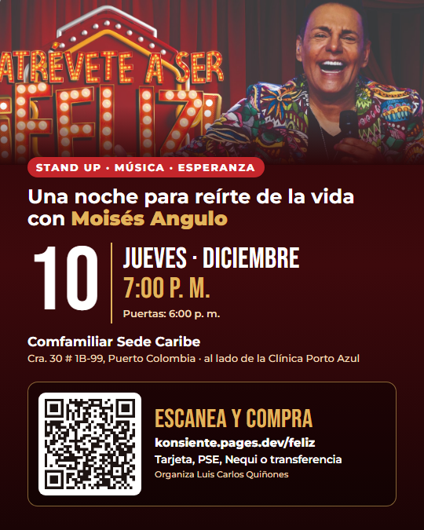
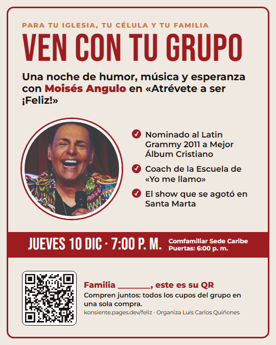
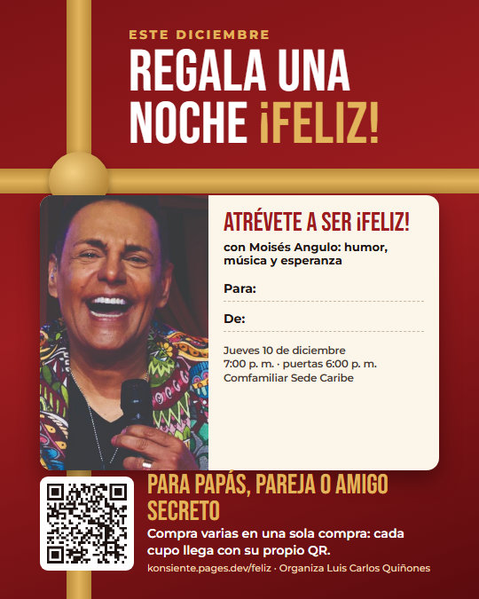

Propuesta de dirección digital · KVRA para Luis Carlos Quiñones
Atrévete a ser ¡Feliz! Barranquilla, a sala llena
El show de Moisés Angulo ya pasó por Bogotá, Bucaramanga, Medellín y Santa Marta, donde se agotó. Este es el plan de KVRA para llenar la sala en Barranquilla: iglesias anfitrionas, el show como regalo de diciembre, el contenido de Moisés y una pauta medida peso a peso.
Jueves 10 dic 2026 · 7:00 p. m.Comfamiliar Sede CaribePauta $1.500.000 (≈ USD 470)
Octubre de 2026 · Datos públicos revisados el 22 de octubre de 2026
Resumen en 30 segundos
El plan en tres ideas
La metaLlenar la sala
En Sede Caribe una sala recibe unas 80 a 90 personas, y los tres grandes salones unidos, hasta 1.200. Con el salón confirmado fijamos la meta de boletas de cada semana.
La ideaMoisés invita, las iglesias llenan
Así se agotó en Santa Marta: con una iglesia anfitriona. Sumamos el show como regalo de diciembre, para familias y empresas, y una pauta que empuja en las fechas de pago.
La inversiónPauta: $1.500.000
≈ USD 470,00, pagados directo a Meta. La meta: máximo $18.000 de pauta por boleta (≈ USD 5,64), el 20 % de su precio. El trabajo de KVRA: $3.500.000 (≈ USD 1.096,67).
Dólares con la TRM de $3.191,47 del 22 de octubre de 2026 (datos.gov.co). Capacidades: página oficial de Comfamiliar Sede Caribe.
Lo que encontramos · revisado el 22 de octubre de 2026
Moisés ya tiene público. Hay que despertarlo
Revisamos sus redes, sus funciones anteriores y lo que mejor le funciona. Estos datos cambian la estrategia.
95,6 milseguidores en Instagram (@moisesangulo)
102 milsuscriptores en YouTube, con su devocional diario
77 miloyentes al mes en Spotify
+12 Mde vistas de «Diciembre llegó (Brisas de diciembre)» en YouTube
8.762seguidores en TikTok (@moisesangulooficial): la red con más espacio para crecer
Cinco públicos que ya lo conocen
La música de los 90
«Brisas de diciembre», «El amor llegó», el Carnaval de Barranquilla.
Las telenovelas
Más de 20, entre ellas «Música maestro», «Alejo» y «Celia».
«Yo me llamo»
Coach de la Escuela. La temporada 11 está al aire desde julio de 2026.
La comunidad cristiana
Nominado al Latin Grammy 2011 a Mejor Álbum Cristiano por «¡Alégrense!».
Barranquilla
Es barranquillero: hijo de un taxista y una costurera, como él mismo cuenta.
Lo que mueve a su gente: su historia, no el flyer
Reproducciones de sus videos en TikTok (cifras del 22 de octubre de 2026).
«Las brisas de diciembre» (diciembre de 2022)113.500
Su historia: «mi papá era taxista y mi mamá costurera», 28 s (octubre de 2025)69.500
Sketch de humor con su personaje «Pacho» (abril de 2026)6.318
Anuncios del show con fecha y lugar (2025)279 a 1.147
Qué significa: una historia suya de 30 segundos rindió unas 60 veces más que un anuncio con fecha. La pauta va a usar sus historias, su música de diciembre y su humor, con la fecha al final.
El show ya está probado
2 ago 2024Bogotá
Primera función que encontramos: «un evento para la vida con música, alegría y humor».
Mayo 2025Bucaramanga
Moisés agradece en especial a Casa sobre la Roca y a sus pastores.
Octubre 2025Medellín
Su video del taxista y la costurera invitaba a esta función.
28 mar 2026Santa Marta · agotado
Con una iglesia anfitriona. Él lo dijo así: «no fue un evento, fue un regalo compartido».
10 dic 2026Barranquilla
Ahora llega a su ciudad, en plena temporada de diciembre.
Lo que hay que resolver ya
Barranquilla no está anunciada
En sus redes no hay ningún anuncio de la función del 10 de diciembre. Lo último del show es el agradecimiento de Santa Marta, en abril.
Juntos rinden más
El reel de Luis Carlos con Moisés (17 de agosto) sacó 2.348 «me gusta». Las publicaciones normales de la cuenta de Luis Carlos sacan entre 11 y 80. Las publicaciones en colaboración son la base.
Su web no abre
moisesangulo.com está caída. La página de boletas del evento debe ser la fuente oficial del evento, enlazada desde sus redes.
Fuentes de esta sección
Perfiles públicos de Moisés Angulo: instagram.com/moisesangulo, youtube.com/@moisesangulotv, tiktok.com/@moisesangulooficial y Spotify (cifras del 22 oct 2026).
Videos de TikTok de @moisesangulooficial: 7 jul 2024 (Bogotá), 26 may 2025 (Bucaramanga), 10 oct 2025 (taxista y costurera), 1 dic 2022 (Brisas de diciembre), 11 abr 2026 (Pacho), 2 abr 2026 (Santa Marta).
Wikipedia, «Moisés Angulo» y «12th Annual Latin Grammy Awards». Instagram de @moisesangulo, 21 ago 2026 (Escuela de «Yo me llamo»).
Instagram de @quinoneq, reel del 17 ago 2026. Comfamiliar Sede Caribe: lp.comfamiliar.co/sede-caribe. TRM: datos.gov.co, 22 oct 2026.
Quién hace qué
Tres equipos, un solo objetivo
El artista
Moisés y su equipo
Anuncia Barranquilla con el flyer: la primera de 3 publicaciones suyas en colaboración con Luis Carlos.
Acepta desde su cuenta las publicaciones de Luis Carlos en las que sale como colaborador: los carruseles y los videos de la pauta.
Entrega sus videos y el material de funciones anteriores, y graba sus historias, la invitación desde Barranquilla, la serie «Pacho en diciembre» y el video de regalo.
Graba un saludo corto para cada iglesia aliada.
Firma la autorización para usar su imagen en redes y pauta.
El organizador
Luis Carlos Quiñones
Abre las puertas con los pastores, Comfamiliar y las empresas.
Su cuenta es la que pauta, siempre en colaboración con Moisés.
Confirma el salón y el aforo, y decide precios de grupo y cortesías.
La dirección digital
KVRA
Estrategia, calendario y dirección de todo lo digital.
Reels, clips, carruseles y las cuentas de TikTok del evento.
Kits para iglesias y empresas, pauta y reporte cada lunes.
Estrategia 1 · Iglesias anfitrionas
En Santa Marta fue una iglesia anfitriona; en Barranquilla, cuatro
Al pastor no se le pide «ayúdame a vender boletas». Se le ofrece una noche limpia, con un artista cristiano reconocido, para que su gente invite a amigos y familiares que no van a la iglesia. Empezamos por las tres que ustedes eligieron (CBI, Living y Hillsong) y sumamos una cuarta.
Encontrada
CBI · Centro Bíblico Internacional
Pastores
Rafael y Adriana Gómez
Domingos
Villa Country (Cra. 59A # 77-35): 7, 9 y 11 a. m. y 5 p. m. · Colinas (km 6 vía Puerto Colombia): 11 a. m.
Redes
Instagram @cbint, 37 mil · YouTube, 143 mil
Ojo
Su Discipulado de Parejas se reúne los jueves a las 6:30 p. m.
La idea: que el jueves 10 el grupo de parejas vaya al show. CBI ya recibió el 7 de agosto un evento cristiano de otra productora, con aforo de 760 personas, y el 5 de noviembre tiene su Conferencia de hombres: buen momento para anunciar.
Encontrada
Living · LivingRoom Barranquilla
Fundadores
Carlos y Natalia Fraija
Domingos
C.C. Gran Centro (Cl. 70 # 52-54, local 201A): 10:30 a. m., 12 m., 5:30 p. m. y 7 p. m.
Redes
@livingroombaq, 15 mil · @carlosfraija, 55 mil
Ojo
Sus Living Groups, de 10 a 20 personas, se han reunido los jueves.
La idea: «ven con tu Living Group». Su fundación ALIVE hace cada fin de año «Regala una sonrisa»: una alianza de regalo encaja con su gente.
Encontrada
Hillsong Barranquilla
Pastores
Joaquín y Leidy Vega
Domingos
Cra. 53 # 74-99: 9:30 y 11:30 a. m.
Redes
@hillsongbarranquilla, 13,5 mil · antes Salvation Church (@salvationchurchofficial, 7.483)
Ojo
Sus Grupos de Conexión pueden reunirse los jueves.
La idea: pedirles a los pastores permiso para los volantes a la salida de las dos reuniones del domingo, y que los grupos del jueves hagan del 10 de diciembre su salida de grupo.
Propuesta de KVRA
Casa Roca Barranquilla
Domingos
Calle 80 # 47-59: 7:30, 9:30 y 11:30 a. m.
Redes
@casarocabarranquilla, 5.199
Por qué
Es de Casa sobre la Roca, la red que acogió el show en Bucaramanga y donde Moisés y su esposa recibieron a Cristo en 1995.
La idea: el vínculo más natural. Que el equipo de Moisés presente la propuesta a sus pastores.
Cómo se trabaja con cada iglesia
1
La alianza
Luis Carlos pide cita con los pastores en la semana de preparación (22 al 25 de octubre), para reunirse con ellos el domingo 1 de noviembre. Nada se reparte sin su permiso.
2
El saludo de Moisés
Un video de 30 s: «Hola, familia de…», con la fecha y el QR de esa iglesia. Va en el culto y en sus grupos de WhatsApp.
3
Volante y mesa
Volante con QR propio y una mesa a la salida: se paga con tarjeta, PSE, Nequi o transferencia, ahí mismo.
4
Un líder por grupo
Células, parejas y jóvenes compran juntos: hasta 100 boletas en una sola compra. El precio de grupo lo deciden ustedes: ________.
5
Moisés en un culto
Si su agenda lo permite, canta o da su testimonio antes del show en la iglesia que más haya vendido.
Las fechas con las iglesias
1 nov reunión con pastoresJue 5 nov Conferencia de hombres de CBI8 nov anuncio, video y volantes15 nov mesa de venta22 nov Moisés en un culto, si puede29 nov mesa de venta, víspera de quincena6 dic recordatorio y última llamada
Cristiano y familiar, crea lo que crea cada quien. Las iglesias evangélicas son el corazón del público, pero en Colombia los evangélicos son cerca de 1 de cada 10 personas (DANE, 2021). Por eso el show se presenta abierto a todos, y lo sumamos al regalo de diciembre y a la pauta.
Fuentes de esta sección
CBI: cbint.org (sedes y eventos) e Instagram @cbint (22 oct 2026). Evento del 7 de agosto de 2026: calendario oficial de eventos de Barranquilla (baq.com.co).
LivingRoom: livingroomint.org (sede de Barranquilla y Living Groups) e Instagram @livingroombaq y @carlosfraija (22 oct 2026).
Hillsong Barranquilla: hillsong.com/colombia, Instagram @hillsongbarranquilla y @salvationchurchofficial (22 oct 2026).
Casa Roca Barranquilla: Instagram @casarocabarranquilla. Más Vida Barranquilla y Centro Mundial de Avivamiento: avivamiento.com/sedes y sus perfiles públicos (22 oct 2026).
Religión en Colombia: Encuesta de Cultura Política del DANE, 2021 (vía Wikipedia).
Estrategia 2 · El show como regalo
En diciembre, el cupo es el regalo
Por estas fechas la gente ya está buscando qué regalar. Proponemos que «Atrévete a ser ¡Feliz!» sea ese regalo: para los papás, la pareja, el amigo secreto, el equipo de una empresa o los servidores de una iglesia. Y para empezar no hay que cambiar nada de la página de compra.
«…no fue un evento, fue un regalo compartido».
«Ven con amigos, con tu pareja… o ven solo».
Por qué el regalo encaja en diciembre
82 %de los colombianos planea dar regalos en Navidad.
26 %compra sus regalos en el Black Friday y los otros días de descuento de fin de noviembre. El 47 %, en diciembre.
53 %juega el amigo secreto con sus compañeros de trabajo: es su escenario principal.
31 %regala en el amigo secreto algo que no es un objeto: una invitación a comer (19 %) o un bono (12 %).
A quién le regalan en Navidad
Porcentaje de personas que planea darle un regalo a cada uno.
A su familia más cercana87 %
A su pareja70 %
A sí mismos50 %
A sus amigos43 %
Qué significa: el regalo de diciembre ya tiene presupuesto y destinatarios: la familia, la pareja y uno mismo. Y el precio cabe: en Amor y Amistad, el 52 % pensaba gastar menos de $100.000 (≈ USD 31,33), y un cupo cuesta $90.000 (≈ USD 28,20).
Navidad: Fenalco (encuesta de Navidad 2025) y Appinio (diciembre de 2024; el estudio no publica su muestra). Amigo secreto: Fenalco, Amor y Amistad 2025 y 2026. Son datos de septiembre: no encontramos cifras confiables del amigo secreto de diciembre.
Cómo se regala hoy, sin cambiar nada
1
Compran varios cupos
De 1 a 100 en una sola compra: con tarjeta, PSE o Nequi en la página, o por transferencia o en efectivo, registrado en «Ya pagué mi cupo».
2
Llega un PDF
Un correo con un PDF: una página por cupo, cada una con su propio QR.
3
Cada página es un regalo
Se imprime y va en un sobre, o se manda por WhatsApp con una tarjeta «De / Para».
4
El precio no aparece
El cupo dice «CUPO · UNA (1) PERSONA», sin el valor. Quien lo recibe solo muestra su QR al ingresar.
Tres formas de regalarlo
Funciona hoy
Para los papás
Compra
Hijos e hijas adultos.
Para
Papá y mamá (2 cupos) o toda la familia.
Cómo
Compran los cupos y entregan cada página en el sobre impreso o por WhatsApp, con la tarjeta «De / Para».
Por qué
El 87 % le regala a su familia, y la familia se lleva casi la mitad del presupuesto de regalos (49 %).
El gancho: «Este año regálales algo que no se guarda en el clóset: una noche para reírse juntos».
Funciona hoy
Para la pareja
Compra
Él o ella.
Para
Su pareja (2 cupos).
Cómo
Una compra de 2 cupos y la tarjeta «De / Para», impresa o por WhatsApp.
Por qué
El 70 % le regala a su pareja. Moisés está casado con Diana Mayorga desde 1986 y tiene un pódcast sobre el matrimonio, «Pacto de Amor».
El gancho: «Una cita que no es otra cena».
Si se intercambia antes del 10 dic
El amigo secreto
Compra
Quien juega, o quien organiza el juego: puede comprar los cupos de todo el grupo en una sola compra.
Para
Un compañero de la oficina.
Cómo
Compra normal. KVRA les da el sobre y 3 tarjetas de «endulzado», los detalles que se mandan los días antes de la revelación: «Pista 1: el 10 de diciembre no hagas planes».
Por qué
El 53 % juega el amigo secreto en el trabajo, y el 31 % ya regala una invitación o un bono.
El gancho: «Tu amigo secreto te regala una noche para reírte».
Funciona hoy
Para uno mismo
Compra
La misma persona que va.
Cómo
Compra normal de 1 cupo.
Por qué
La mitad (50 %) planea regalarse algo en Navidad. Y Moisés lo dice: «…o ven solo».
El gancho: «Fue un año pesado. Date una noche para reírte».
Falta definir la factura
Su equipo, en el cierre de año
Compra
El gerente de una pyme o el área de Talento Humano o Bienestar.
Para
Sus empleados, con un acompañante si la empresa quiere.
Cómo
Recibe una cotización de TURQUEXA S.A.S., la empresa que vende los cupos. Paga por transferencia y la registra en «Ya pagué» (hasta 100 cupos por registro; si son más, varios registros). Llega un PDF con un cupo por página, y Talento Humano reenvía cada página o la entrega impresa en el sobre.
Ojo
El Día de la Familia dejó de ser obligatorio para las empresas privadas que ya bajaron a 42 horas. El show se ofrece como un plan voluntario de fin de año, nunca como «cumpla la ley».
El gancho: «Este año no les regales otra ancheta: regálales una noche para reírse juntos».
Falta definir la factura
Sus clientes
Compra
Empresas que hacen atenciones de fin de año a sus clientes.
Para
Sus mejores clientes, por ejemplo 2 cupos por cliente.
Cómo
Igual que con el equipo, más una tarjeta con el logo de la empresa que compra, solo en su sobre: nunca como patrocinador del show.
El gancho: «Te invitamos a cerrar el año riéndote, el 10 de diciembre».
Falta definir la factura
Fondos de empleados y cooperativas
Compra
El fondo o la cooperativa.
Para
Sus asociados, como aguinaldo de fin de año.
Cómo
Igual que con el equipo. La factura va a nombre del fondo.
El gancho: «El aguinaldo de este año es una noche para reírse».
Para la conversación con la empresa
Es el mismo formato con el que Tuboleta les vende a las empresas: un asesor, precio por volumen y un regalo con la marca de quien compra.
Y Moisés ya tiene un antecedente con instituciones: en diciembre de 2024 cantó en la clausura de los eventos de la Fundación Falcao, invitado por Falcao.
Funciona hoy
La iglesia agradece a sus servidores
Compra
El pastor o el líder de un ministerio.
Para
Líderes y voluntarios, como gracias de fin de año.
Cómo
Una compra de grupo de 1 a 100 cupos, en la página o por transferencia en «Ya pagué». Llega un solo PDF y el líder reparte las páginas con la tarjeta «Tu iglesia te regala…».
El gancho: «Regálale una noche a quien sirvió todo el año».
Funciona hoy
El grupo regala a uno de los suyos
Compra
Una célula o un grupo pequeño, que reúne la plata entre todos.
Para
Alguien del grupo que tuvo un año difícil.
Cómo
Un líder hace la compra y entrega la página del cupo con la tarjeta «Tu grupo te regala…».
El gancho: «Que este diciembre alguien de tu grupo se ría de verdad».
Con el permiso de cada iglesia. Se ofrece en persona en las iglesias aliadas de la Estrategia 1, y nada se reparte sin el permiso de sus pastores. No se prometen resultados espirituales. El precio de grupo y los cupos que se apartan por iglesia los deciden ustedes: ________.
Un cupo regalado que nadie usa es una silla vacía. En Estados Unidos, la película «Sound of Freedom» invitó a su público a pagar boletas para otras personas: según la productora, se usó el 84 % y hubo salas «agotadas» con sillas vacías. Por eso cada tarjeta lleva el nombre de quien recibe, y a quien regala le pedimos confirmar que esa persona va. Si no puede ir, el cupo se le pasa a otra: solo tiene que mostrar el QR.
Por qué una empresa sí puede comprarlo
Tres argumentos para Talento Humano y para el contador de la empresa. Van en la hoja para empresas, siempre con la frase «confírmenlo con su contador».
Código Sustantivo del Trabajo, art. 128No es salario
Un regalo ocasional, que el empleador da por voluntad propia, no es salario ni sube las prestaciones. Si la empresa lo repite cada año como política, conviene dejar por escrito que no es salario. Y casi nunca cambia los aportes a salud y pensión: los pagos que no son salario pueden llegar hasta el 40 % del total (Ley 1393 de 2010, art. 30).
Estatuto Tributario, art. 107-1Deducible, con tope
Los regalos a empleados, clientes y proveedores se pueden deducir como «atenciones», con factura y hasta el 1 % de los ingresos fiscales netos, un tope que comparten con las fiestas y los demás regalos del año. Ejemplo: con ingresos de $1.000 millones (≈ USD 313.335,23), el tope es $10.000.000 (≈ USD 3.133,35): unos 111 cupos, si no hubo otros gastos de ese tipo.
Ley 1493 de 2011, art. 6Sin IVA, si aplica
Los espectáculos públicos de artes escénicas (teatro, música, danza, circo, magia) están excluidos del IVA. Solo aplica si el show califica así, y eso lo confirma el contador de TURQUEXA S.A.S.
Lo que nunca decimos: «deducible al 100 %» ni «obligatorio por ley». Cada empresa lo confirma con su contador.
Lo que ustedes deciden antes de venderles a empresas
Marquen lo que ya esté decidido: las marcas se guardan solo en este navegador.
Como referencia, el Teatro Mayor de Bogotá da 20 % a los empleados de empresas con convenio y limita esos cupos al 10 % por localidad. Si algún día crean un cupo especial de $157.122 o más (≈ USD 49,23), se paga una contribución del 10 % (Ley 1493, art. 7): son 3 UVT de 2026, la unidad de valor que la DIAN fija cada año. El cupo de $90.000 (≈ USD 28,20) está por debajo.
Comfamiliar: un canal que ya existe
Ya vende teatro con subsidio
En su tarifario de recreación, Comfamiliar Atlántico vende cupos de «Obra de teatro Barranquilla» con subsidio según la categoría del afiliado. Un trabajador de categoría A (de 1 a 2 salarios mínimos) paga $54.400 (≈ USD 17,05); uno de categoría B (de 2 a 4), $60.100 (≈ USD 18,83); quien no está afiliado, $151.200 (≈ USD 47,38).
Además, cada empresa afiliada tiene un relacionista de Comfamiliar que le ofrece planes de cultura y bienestar.
Lo que le pedimos
Que «Atrévete a ser ¡Feliz!» entre a ese tarifario, con subsidio para las categorías A y B. Precio y tamaño del bloque: ________.
Que sus relacionistas se lo ofrezcan a las empresas afiliadas.
Que lo publiquen como un evento de su Sede Caribe.
Luis Carlos pide la reunión cuanto antes: ya tiene la relación por el alquiler del salón.
Puede ir lento. La Superintendencia del Subsidio Familiar intervino Comfamiliar Atlántico el 6 de julio de 2026, por 12 meses, entre otras razones por riesgos en su contratación. Lo pedimos ya, con fecha límite (si en 10 días no hay respuesta, seguimos sin ese canal), y la meta de ventas no depende de él.
Las piezas que hace KVRA
Para entregar en mano
Sobre imprimible
Para meter la página del cupo, con espacio para «De» y «Para».
Para WhatsApp
Tarjeta de regalo «De / Para»
Una imagen lista para mandar junto con la página del cupo.
Para el amigo secreto
Tres tarjetas de «endulzado»
Pistas para los días antes de la revelación: «Pista 1: el 10 de diciembre no hagas planes».
Para empresas
Hoja de una página
«Cierre de año con tu equipo»: cómo funciona, los tres argumentos de arriba y los precios en ________ hasta que ustedes los aprueben.
Primero una muestra de cada pieza; con su visto bueno, el resto. Si el show tiene código PULEP, va en todas.
Cuándo empujar cada regalo
27 oct – 29 novEmpresas, fondos e iglesias
Necesitan tiempo para aprobar el gasto, pagar y recibir la factura: por eso se contactan primero y las ventas se cierran antes del 30 de noviembre.
24 nov – 9 dicRegalo personal
Papás, pareja, amigo secreto y para uno mismo.
27 – 30 novBlack Friday
Solo con una oferta aprobada por ustedes. Si no la hay, el gancho es la tarjeta de regalo lista para usar, sin costo para quien compra.
5 – 8 dicVelitas y festivo del 8
Menos empuje: el lunes 7 es la noche de Velitas y el martes 8 es festivo, y muchas familias tienen planes. Se retoma el 9 y el 10.
Black Friday con reglas. En noviembre de 2025 la Superintendencia de Industria y Comercio multó a 10 empresas, entre ellas Olímpica, Makro y Sodimac, con más de $3.068 millones (≈ USD 961.312,50) por promociones del Black Friday 2024 que no informaban las condiciones, la cantidad en promoción ni el derecho de retracto (devolver una compra por internet dentro de 5 días hábiles). Si hacen oferta, la página dirá su vigencia, cuántos cupos tiene, si se suma a otros descuentos y cómo aplica el retracto, con enlace a los términos de compra.
No contamos con la prima de diciembre para vender: la ley deja pagarla hasta el 20 de diciembre, después del show.
Qué significa: el regalo funciona hoy, sin tocar el sistema: se compran varios cupos y cada página del PDF es un regalo, sin precio a la vista. Para venderles a empresas faltan tres decisiones suyas: la factura a nombre de la empresa, el precio por volumen y el aforo. Las empresas se contactan desde el 27 de octubre: por eso esas decisiones van primero.
Fuentes de esta sección
Fenalco, Encuesta de Navidad 2025 (consultada el 22 oct 2026).
Appinio, estudio de regalos de Navidad, publicado por La Nota Económica (21 dic 2024).
Fenalco, Amor y Amistad 2026, citada por RTVC Noticias (19 sep 2026), y Amor y Amistad 2025, citada por Portafolio (19 sep 2025).
El Tiempo, modalidades del amigo secreto (6 dic 2023).
TikTok de @moisesangulooficial: anuncio de Santa Marta (12 mar 2026) y agradecimiento (2 abr 2026), y video de la Fundación Falcao (12 dic 2024). Wikipedia, «Moisés Angulo». Pódcasts de youtube.com/@moisesangulotv (22 oct 2026).
Términos de compra de Atrévete a ser ¡Feliz!, publicados el 20 oct 2026.
Código Sustantivo del Trabajo, arts. 127, 128 y 306; Ley 1393 de 2010, art. 30; Estatuto Tributario, arts. 107 y 107-1; Ley 1493 de 2011, arts. 3, 6, 7 y 10 (Secretaría del Senado, consultados el 22 oct 2026). Oficio DIAN 2822 de 2019.
Resolución DIAN 000165 de 2023 (documento equivalente para boletas). Guía de preguntas frecuentes del PULEP, Ministerio de Cultura. UVT de 2026: Resolución DIAN 000238 de 2025, vía INCP.
Día de la Familia: Ley 1857 de 2017, Ley 2101 de 2021 y El País (26 may 2026).
Comfamiliar Atlántico: tarifario de recreación (junio de 2026), «Cultura en tu empresa» y aviso de la intervención de la Superintendencia del Subsidio Familiar (Resolución 0527 del 6 jul 2026).
Tuboleta para Empresas (oct 2026); Teatro Mayor Julio Mario Santo Domingo, descuentos (2025).
«Sound of Freedom»: Wikipedia, con cifras de Deadline (4 mar 2024).
Sanción de la SIC por el Black Friday 2024: El Heraldo (25 nov 2025). Festivos de 2026: officeholidays.com.
TRM: datos.gov.co, 22 oct 2026.
Estrategia 3 · El contenido de Moisés y las cuentas de TikTok
Moisés pone la historia. KVRA la lleva lejos
A su gente la mueven sus historias, su humor y su música de diciembre, no el flyer. Por eso el contenido sale de su propio material, con su permiso por escrito. KVRA lo edita, lo reparte en cinco cuentas de TikTok y le pone pauta en Instagram y Facebook a lo que mejor funcione.
Lo que le pedimos a Moisés y a su equipo
Lo acordaremos con Diana Mayorga, su esposa, que coordina su carrera. KVRA no maneja sus cuentas: él publica; nosotros preparamos y editamos.
1
3 a 5 historias suyas
Videos verticales de 25 a 30 s, grabados con el celular, que terminen con «10 de diciembre, Barranquilla». Temas que él ya cuenta: el taxista y la costurera, la historia de Tomás, sus nervios frente a Víctor Mallarino en su primera novela, el perdón y, si quiere contarla, «la fama no me hizo feliz». Y dos grabaciones más: la invitación desde Barranquilla (20 a 30 s, en el Malecón o frente a la fachada de Comfamiliar, con el guion que le manda KVRA) y, en la semana del 23 de noviembre, un video para regalar la noche.
2
Un saludo por iglesia
30 s para cada iglesia aliada: «Hola, familia de…», con la fecha y el lugar. Se pasa en el culto y en sus grupos de WhatsApp.
3
Las grabaciones de otras funciones
Sin editar, por medio de su productor, Edwin «Mattu» Becerra. Sobre todo Santa Marta: el público riendo, cantando, emocionado. Es el mejor material para los anuncios.
4
Los videos de Pacho, en bruto
Los archivos originales, sin el logo de ninguna red. Así cada clip se edita de cero y TikTok no lo toma como una copia. Y la serie nueva «Pacho en diciembre»: 3 sketches de 60 a 90 s que graba él.
5
Permiso para «Diciembre llegó»
Usar el audio en reels y anuncios, con el visto bueno de quien tenga los derechos de la grabación. Y saber si la canta en el show.
6
El flyer y las colaboraciones
El flyer en sus redes, en colaboración con Luis Carlos: la primera de 3 publicaciones suyas, en fechas fijas. Además, acepta desde su cuenta las publicaciones de Luis Carlos en las que sale como colaborador: los 6 carruseles y los videos de la pauta. En Instagram no publica nada desde el 5 de octubre.
7
El show en su devocional
Una mención en su devocional diario de YouTube, donde tiene 102 mil suscriptores, y en su lista de devocionales por WhatsApp y Telegram.
8
Su enlace, a la página de venta
Que el enlace de su perfil lleve a la página de compra del evento. Su página web está caída: hoy quien lo busca no encuentra dónde comprar.
Los tipos de video que le funcionan
Cifras de sus redes, leídas el 22 de octubre de 2026, y un caso de afuera. Cada uno sirve para algo distinto.
TikTok25 a 30 s
Su historia, con la fecha al final
69.500 reproducciones para «mi papá era taxista y mi mamá costurera» (28 s). Sus anuncios con fecha y lugar: de 279 a 1.147.
Regla: primero la historia; la fecha, en los últimos segundos.
YouTube y TikTokDesde mediados de noviembre
Su música de diciembre
Más de 12 millones de vistas de «Diciembre llegó (Brisas de diciembre)» en YouTube. En TikTok es su video más visto y más compartido: 113.500 reproducciones y 1.937 veces compartido.
Regla: es el gancho de la temporada, con el permiso del audio.
TikTokHumor
Pacho, su personaje
6.318 y 8.178 reproducciones para dos videos de humor de 2026 con Pacho («Todos conocemos a un Pacho…»). Rinden más que sus anuncios del show.
Regla: el problema de todos los días, el remate y una reflexión al final.
InstagramFe y gratitud
Lo íntimo, no la venta
5.984 «me gusta» para su homenaje de fe al pastor Darío Silva-Silva. Sus otras publicaciones recientes: de 51 a 1.445.
Regla: el anuncio del show debe sonar a gratitud y a comunidad.
InstagramColaboración
Moisés con Luis Carlos
2.348 «me gusta» para el reel de los dos. Una publicación normal de la cuenta de Luis Carlos saca entre 11 y 80.
Regla: todo lo importante sale en colaboración, en las dos cuentas a la vez.
Lo que funciona en otros35 a 60 s
Un momento real del show
Un momento improvisado de un show de Michael Jr. que termina en una lección lleva 1,78 millones de vistas. Un clip de Matt Rife con su público llegó a unos 20 a 30 millones de vistas, según él, y su gira vendió 600.000 boletas para 256 funciones en dos días.
Regla: empezar con risa y cerrar con esperanza, con lo grabado en Santa Marta.
Cómo se edita cada clip
Vertical, con el gancho dicho y escrito en los primeros 3 segundos; para sus anuncios, TikTok recomienda tenerlo dentro de los primeros 6.
Subtítulos cortos y nada importante tapado por los botones de la aplicación.
Cada cierre lleva la fecha, el lugar o la acción, por ejemplo: «Jueves 10 de diciembre · Comfamiliar Sede Caribe · enlace en el perfil».
De 3 a 5 versiones de cada anuncio, para cambiarlas en cuanto bajen los resultados.
Qué significa: el material que más vende ya existe o se graba en una tarde con el celular. No hacen falta comerciales: hacen falta el permiso de Moisés, su archivo y una buena edición.
Las 5 cuentas de TikTok, bien hechas
Dos cuentas ya existen y tienen historia; tres las abre y las maneja KVRA. Cada una dice claramente qué es y publica cosas distintas.
01@moisesangulooficialLa cuenta de Moisés · ya existe · 8.762 seguidores+
Quién la maneja
Moisés y su equipo. KVRA no tiene acceso: les entregamos los videos editados y ellos deciden qué suben.
Qué publica
El flyer, sus 3 a 5 historias y 1 o 2 invitaciones al show. Si el presupuesto crece y se pauta en TikTok, él genera un código de autorización y KVRA pauta esos mismos videos sin pedirle la contraseña.
Ojo
En TikTok, la cuenta @moisesangulo no es suya: tiene 4 seguidores y ningún video. Ahí nunca se etiqueta; todo remite a @moisesangulooficial. En Instagram su cuenta sí es @moisesangulo.
Medimos: vistas y veces compartido de cada historia
02@quinoneqLa cuenta de Luis Carlos · ya existe · 18.200 seguidores+
Para qué sirve
Si el presupuesto crece y TikTok entra a la pauta, desde aquí se pautan los videos en colaboración con Moisés, con Spark Ads (anuncios hechos con un video que ya está publicado). Las vistas, los «me gusta» y los seguidores que gane se quedan en su cuenta.
Cómo se hace
Si se llega a pautar en TikTok, Luis Carlos genera un código y nos lo pasa: KVRA pauta sus videos sin su contraseña.
Qué publica
Videos en colaboración con Moisés y sus reflexiones, con la invitación al final. Hoy sus videos sacan entre 287 y 1.371 vistas: por eso todo lo suyo sale en colaboración con Moisés.
Medimos: vistas y clics al enlace de compra
03Atrévete a ser Feliz · EventoNueva · la maneja KVRA · la cuenta oficial del show+
Así se presenta
Atrévete a ser Feliz · EventoShow de Moisés Angulo · jue 10 dic · Comfamiliar Sede Caribe, Puerto Colombia · Organiza Luis Carlos Quiñones
Qué publica
Cuenta regresiva, detrás de cámaras, cómo llegar a Sede Caribe, cómo regalar un cupo, «Se agotó en Santa Marta, ahora Barranquilla» (si Moisés lo confirma) y videos que responden comentarios: «¿Dónde es?», «¿Cómo pago?».
Por qué una cuenta oficial de clips: Dry Bar Comedy, una serie de humor limpio, tiene en YouTube un canal aparte solo de clips, con 144 mil suscriptores.
Ritmo
3 videos por semana hasta el 20 de noviembre; desde ahí, 1 diario hasta el show.
Medimos: visitas al perfil y clics al enlace de compra
04Clips de humorNueva · la maneja KVRA · dice «no oficial» en el nombre+
Así se presenta
Moisés Angulo Clips · Humor (no oficial)Cuenta de clips del show Atrévete a ser Feliz, con autorización de Moisés. No es su cuenta personal. Oficial: @moisesangulooficial
La foto de perfil lleva una franja que dice «CLIPS».
Qué publica
Momentos del show y de Pacho, de 30 a 90 s (sus Pacho de 2026 con 8.178 y 6.318 reproducciones duran 60 y 86 s). El gancho, dicho y escrito al empezar: «Todos conocemos a un Pacho…». Cierre: «Jueves 10 de diciembre · Puerto Colombia · enlace en el perfil».
Ritmo
4 o 5 videos por semana.
Medimos: cuántos lo ven completo y cuántos lo comparten
05Clips de feNueva · la maneja KVRA · dice «no oficial» en el nombre+
Así se presenta
Moisés Angulo Clips · Fe (no oficial)Cuenta de clips del show Atrévete a ser Feliz, con autorización de Moisés. No es su cuenta personal. Oficial: @moisesangulooficial
Qué publica
Reflexiones y momentos del show que pasan de la risa a la esperanza, cortados del material en bruto. En series («Parte 1, 2, 3») y respondiendo comentarios en video. Cada clip cierra en TikTok, sin mandar a otra red: una reflexión suya de 53 s sacó 1.544 vistas, y sus devocionales que remiten a YouTube, entre 285 y 914.
Referencia: la cuenta de difusión de Dante Gebel dice en su descripción qué es, publica en series y tiene 365.300 seguidores; una cuenta de fans sin descripción, 1.923.
Ritmo
4 o 5 videos por semana.
Medimos: comentarios, guardados y veces compartido
Las tres cuentas nuevas suman cerca de 90 clips si arrancan la semana del 26 de octubre. Se editan por tandas: primero un clip de muestra por cuenta, y la tanda solo después del visto bueno de ustedes y del equipo de Moisés. Antes de abrirlas, revisamos que esos nombres estén libres.
Las reglas para no perder las cuentas
TikTok permite tener varias cuentas para contenido de fans o creativo, pero no para engañar. Si detecta engaño, puede cerrar la cuenta y también las que se abran después. Estas reglas salen de sus normas, vigentes desde el 24 de septiembre de 2026.
Sí
El nombre visible dice «no oficial» o «Clips», y la descripción remite a @moisesangulooficial.
Cada clip con edición propia: gancho escrito, subtítulos, corte nuevo y cierre con la fecha, hecho desde el material en bruto.
El aviso de contenido comercial (la opción que TikTok muestra al publicar) activado en los videos que venden cupos. Lo exige su política desde el 31 de agosto de 2026.
Audio original del show o canciones de la Biblioteca de Música Comercial (las que TikTok deja usar a marcas y negocios).
Cada cuenta manejada a mano, con una persona de KVRA detrás.
No
Hacerse pasar por Moisés.
Subir el mismo archivo en dos cuentas, o un video con la marca de agua de otra red (el logo de TikTok, Instagram o CapCut pegado al video).
Programas que manejen las cuentas solas, ni seguidores o «me gusta» comprados.
Ganchos que piden algo a cambio («comparte si amas a Dios», «sígueme y recibe tu bendición») o escasez falsa («quedan 3 cupos»): TikTok los saca de «Para ti», su página principal.
Cortar o pegar frases para que parezca que dijo algo que no dijo.
Un Moisés hecho con inteligencia artificial: ni su cara ni su voz.
Canciones de moda de la biblioteca general de TikTok.
La confianza es el producto. A la banda Geese la acusaron de montaje cuando se supo que una agencia había creado miles de cuentas para compartir clips. Para un artista cristiano, que se descubra que una «cuenta de fans» era de una agencia cuesta más que cualquier vista. Por eso nuestras cuentas dicen quién las maneja.
Lo que se puede esperar, sin cuentos
350vistas por video, en promedio, en cuentas de TikTok de 1.000 a 5.000 seguidores (Socialinsider, 2026)
460 a 510vistas saca la publicación típica en TikTok, se publique poco o mucho (Buffer, 11,4 millones de publicaciones)
+34 %más vistas por publicación para quien publica 11 o más veces por semana: la ganancia viene de los pocos videos que se disparan
37,7 Madultos en Colombia a los que llegan los anuncios de TikTok: el 93 % (DataReportal, 2026)
Una cuenta nueva probablemente se quede en cientos de vistas por video, a menos que pegue un clip. TikTok dice que el número de seguidores no decide lo que recomienda, así que un buen clip puede despegar desde una cuenta nueva. Pero TikTok le da poco peso al lugar donde está quien mira: lo gratis puede llegar a cualquier parte y no garantiza llegar a Barranquilla. A Barranquilla llega la pauta.
1
Probar
Las tres cuentas nuevas prueban ganchos distintos toda la semana.
2
Escoger
Cada lunes, los 3 a 5 clips a los que mejor les fue, de cualquiera de las cinco cuentas.
3
Pautar
Los mejores pasan a Instagram y Facebook, sin la marca de agua de TikTok, como publicación en colaboración de Luis Carlos con Moisés. Ahí entran a la pauta de $1.500.000 (≈ USD 470,00), solo para Barranquilla, Soledad, Puerto Colombia y Malambo. En TikTok no se pauta por ahora: entra solo si el presupuesto crece.
4
Cortar
Si en 2 semanas una de las cuentas nuevas promedia menos de 300 vistas por video, deja de publicar: sus clips pasan a la que mejor vaya y ese esfuerzo, a la pauta.
5
Medir
Un enlace distinto por cuenta, para saber de dónde sale cada venta. Antes hay que confirmar que la página de venta los cuente.
¿Y en Instagram y Facebook?
Ahí no abrimos cuentas de clips
Meta, dueña de las dos redes, exige que una cuenta no oficial lo diga con total claridad en el nombre; si no, la restringe o la borra. En Facebook, además, baja el alcance de las copias de videos y de todo lo que publica una cuenta que reutiliza contenido ajeno: juntar clips o ponerles una marca de agua no cuenta como aporte. En el primer semestre de 2025, Meta eliminó cerca de 10 millones de perfiles que suplantaban a creadores.
Ahí van colaboraciones
Una publicación en colaboración sale en dos cuentas a la vez: la de Luis Carlos y la de Moisés, con su permiso y con edición propia. Es el camino al público adulto y de iglesia. En Colombia los anuncios de Facebook llegan a 36,4 millones de adultos, la mitad mujeres; los de Instagram, a 21,6 millones.
La autorización que firma Moisés
Un «sí, hágale» por WhatsApp no alcanza. La Corte Constitucional (Sentencia T-634 de 2013) dice que usar la imagen de una persona, sobre todo en publicidad, necesita su consentimiento; que ese consentimiento debe decir para qué, y que nunca puede ser una renuncia para siempre. Antes de abrir las cuentas, Moisés firma un documento corto que diga:
Qué cuentas: las tres nuevas, con su nombre exacto, y en qué redes se usa su material.
Pauta: que sus videos y su imagen se pueden pautar en Instagram y Facebook, y en TikTok con Spark Ads si se llega a pautar ahí.
Hasta cuándo: por ejemplo, hasta 30 días después del show. Fecha: ________ (lo deciden ustedes con él).
Qué pasa después con las cuentas: se archivan o se le entregan: ________.
Qué ediciones se permiten: cortar, sí; cambiar el sentido de lo que dijo, no. Nada de inteligencia artificial con su cara o su voz.
Quién aprueba: él o Diana Mayorga aprueban el primer lote, y cualquier clip se baja si él lo pide.
Su música: el permiso de quien tenga los derechos de sus grabaciones, si se usan.
Qué significa: el volumen no lo ponen las tres cuentas nuevas: lo ponen las historias de Moisés y la pauta. Las cuentas nuevas son el laboratorio que encuentra el clip que funciona, y ese clip se pauta en Barranquilla, en Instagram y Facebook, como publicación en colaboración de Luis Carlos con Moisés. Todo con su firma y sin poner en riesgo su nombre.
Fuentes de esta sección
Perfiles públicos de Moisés Angulo en TikTok (@moisesangulooficial), Instagram (@moisesangulo) y YouTube (@moisesangulotv), cifras del 22 oct 2026. Videos de TikTok del 1 dic 2022, 10 oct 2025, 13 oct 2025, 18 mar 2026, 8 abr 2026 y 11 abr 2026.
Instagram de @quinoneq, reel del 17 ago 2026, y su perfil de TikTok, leído el 22 oct 2026.
Wikipedia, «Moisés Angulo» (revisión del 16 jul 2026). Caracol TV, entrevista del 7 feb 2016.
Normas de la Comunidad de TikTok, «Integridad y autenticidad» (publicadas el 25 ago 2026, vigentes desde el 24 sep 2026). Política de Contenido de Marca de TikTok (vigente desde el 31 ago 2026).
Ayuda de TikTok para anunciantes: Biblioteca de Música Comercial (julio de 2025), Spark Ads (junio de 2026) y buenas prácticas creativas (junio de 2025). TikTok, «Cómo recomienda videos» (18 jun 2020).
Buffer, estudio de frecuencia de publicación en TikTok (8 oct 2025). Socialinsider, referencias de TikTok 2026 (22 abr 2026). DataReportal, «Digital 2026 Colombia» (8 nov 2025).
Meta: normas de identidad auténtica (cambio del 11 sep 2026) y Meta for Creators sobre contenido no original (14 jul 2025).
Canal de YouTube de Michael Jr. (cifras del 22 oct 2026). Pollstar sobre Matt Rife (17 nov 2023). Wikipedia, «Dry Bar Comedy». Cuenta de TikTok @dantegebeloficial (videos de 2020). MediaCat UK sobre las cuentas de clips (22 abr 2026).
Corte Constitucional, Sentencia T-634 de 2013.
TRM: datos.gov.co, 22 oct 2026 ($3.191,47 por dólar).
Los carruseles · lámina por lámina
Seis carruseles, seis razones para comprar
Cada carrusel resuelve una duda que frena la compra. Van en formato vertical de Instagram y Facebook (1080 × 1350), con los colores y la letra del flyer del show, y salen en colaboración entre Luis Carlos y Moisés. En las láminas decimos «cupo», como en la página de venta, y no ponemos el precio: así no hay que rehacerlas si el precio cambia.
C1Quién es Moisés AnguloQue quien no lo ubica lo reconozca y quiera verlo en vivo+
Dónde va
Instagram y Facebook, en colaboración, al arrancar la venta. Es el primero que se pauta a gente que no lo sigue.
Por qué: lo conocen cinco públicos distintos (la música de los 90, las telenovelas, «Yo me llamo», la comunidad cristiana y Barranquilla), y cada lámina le habla a uno.
Lámina por lámina
1 · Portada¿Lo reconoces?Cinco cosas de Moisés Angulo que quizás no sabías.Foto actual de Moisés, de frente.
2Es de aquíBarranquillero, hijo de un taxista y una costurera. A los 18 años se fue a Bogotá a estudiar actuación y canto.Foto suya de joven, si su equipo la tiene.
3Le puso música a diciembre«Diciembre llegó (Brisas de diciembre)»: más de 12 millones de vistas en YouTube.Foto suya en tarima.
4Más de 20 telenovelasEntre ellas «Música maestro», «Alejo» y «Celia», donde fue Simón Cruz, el papá de Celia Cruz.Solo una foto suya: las imágenes de las novelas tienen dueño.
5Nominado al Latin GrammyEn 2011, a Mejor Álbum Cristiano en Español, por «¡Alégrense!».Foto suya cantando.
6Coach de la Escuela de «Yo me llamo»Este año acompaña a los participantes de la Escuela del programa.Foto suya, sin el logo de Caracol ni del programa.
7Ahora, en vivo en BarranquillaAtrévete a ser ¡Feliz!: humor, música y esperanza. Jueves 10 de diciembre · 7:00 p. m. · Comfamiliar Sede Caribe, Puerto Colombia.El arte del show.
8 · CierreCompra tu cupoEnlace en el perfil. Tarjeta, PSE, Nequi o transferencia.
C2Lo que necesitas saberResolver las dudas antes de comprar y evitar problemas al ingresar+
Dónde va
Fijado en la cuenta del evento y en la de Luis Carlos, y enviado a los grupos de WhatsApp de las iglesias aliadas. Se vuelve a publicar la semana del show.
Por qué: cada duda sin respuesta es una compra que se aplaza, y una pregunta menos al WhatsApp.
Lámina por lámina
1 · PortadaLo que necesitas saberAtrévete a ser ¡Feliz! con Moisés Angulo. Guárdalo para tenerlo a mano.El arte del show.
2¿Cuándo?Jueves 10 de diciembre de 2026. Puertas: 6:00 p. m. Show: de 7:00 a 9:00 p. m.
3¿Dónde?Comfamiliar Sede Caribe. Cra. 30 # 1B-99, al lado de la Clínica Porto Azul, Puerto Colombia.Un mapa sencillo, dibujado por KVRA.
4¿Cómo compro?En la página de compra (enlace en el perfil), con tarjeta, PSE o Nequi. Puedes comprar de 1 a 100 cupos de una vez.
5¿Transferencia o efectivo?Pide los datos al WhatsApp ________. Después registra tu pago en «Ya pagué mi cupo»: el equipo lo verifica y te envía tus cupos.El número lo confirman ustedes.
6Revisa tu correo, y también SpamTus cupos llegan por correo en un PDF, con un QR por persona. Si no lo ves, búscalo en Spam y márcalo como «No es spam».
7Un QR, una persona¿Compraste para otros? Envíale a cada uno su página del PDF. Al ingresar, cada quien muestra su QR.
8 · CierreLlega tempranoLas puertas abren a las 6:00 p. m. y el show empieza a las 7:00 p. m. ¿Aún no tienes tu cupo? Enlace en el perfil.
C3Regala una nocheVender el show como regalo de diciembre: papás, pareja, amigo secreto y para uno mismo+
Dónde va
Instagram y Facebook en colaboración, y pauta del 24 de noviembre al 9 de diciembre, en plena temporada de regalos.
Por qué: de quienes regalan en Navidad, el 87 % le regala a su familia, el 70 % a su pareja y la mitad se regala algo a sí misma (Appinio). Y Moisés llamó a Santa Marta «un regalo compartido».
Lámina por lámina
1 · PortadaEste diciembre, regala una nocheAlgo que no se guarda en el clóset.Foto de Moisés riendo en tarima.
2Para tus papásUna noche para reírse juntos, con el de «Diciembre llegó».
3Para tu parejaUna cita que no es otra cena.
4Para tu amigo secretoEl regalo que no termina en un cajón. Ojo: el intercambio tiene que ser antes del 10 de diciembre.
5Para tiFue un año pesado. Date una noche para reírte.
6«No fue un evento, fue un regalo compartido»Moisés Angulo, sobre la función de Santa Marta.Foto del público de Santa Marta, del material de su productor.
7¿Cómo se regala?Compra los cupos que quieras. Te llega un PDF con un QR por persona: envíale a cada quien su página, o imprímela y métela en un sobre.
8 · CierreRegala Atrévete a ser ¡Feliz!Jueves 10 de diciembre · Comfamiliar Sede Caribe · Enlace en el perfil.
C4Ven con tu grupoQue un líder compre por su grupo: iglesia, célula, familia o amigos+
Dónde va
En los grupos de WhatsApp de las iglesias aliadas, con permiso del pastor, y en la cuenta de Luis Carlos y en la del evento.
Ojo con la pauta: Meta rechaza los anuncios que dan por hecho la religión de quien los ve. La versión para anuncios cambia «célula» por «tu grupo, tu familia, tus amigos».
Lámina por lámina
1 · PortadaEsto se disfruta en grupoAtrévete a ser ¡Feliz! con Moisés Angulo. Jueves 10 de diciembre.Foto del público de una función anterior.
2Un show para todosHumor, música y esperanza, creas lo que creas.
3Tu célula, tu grupo de parejas, tus jóvenesPónganse de acuerdo, reúnan la plata y que el líder compre por todos.
4Una sola compraDe 1 a 100 cupos de una vez, con tarjeta, PSE, Nequi o transferencia.
5Cada quien con su QRLlega un PDF con una página por persona. El líder la reparte por WhatsApp.
6Precio de grupoDesde ____ cupos: ________.Solo si ustedes aprueban un precio de grupo; si no, esta lámina sale.
7¿Tu iglesia quiere ir junta?Escríbenos al WhatsApp ________ y organizamos su noche.El número lo confirman ustedes.
8 · CierreArma tu grupo hoyEnlace en el perfil · Jueves 10 de diciembre · 7:00 p. m. · Comfamiliar Sede Caribe.
C5Para empresas: el cierre de año que sí se recuerdaQue talento humano o el gerente compre cupos para su equipo o sus clientes+
Dónde va
Se envía como PDF por WhatsApp y correo a las áreas de talento humano, y se publica en la cuenta de Luis Carlos. Desde ya y hasta finales de noviembre: una empresa necesita tiempo para aprobar, pagar y recibir factura.
Por qué: responde las dos preguntas que siempre hacen talento humano y contabilidad: si se puede descontar de impuestos y si cuenta como salario.
Lámina por lámina
1 · PortadaEl cierre de año que sí se recuerdaEste año no le regales a tu equipo otra ancheta: regálale una noche para reírse juntos.Foto de un público riendo en una función anterior.
2Para tu equipoUn cupo por persona y, si quieren, uno para su acompañante.
3Para tus clientes«Gracias por este año»: cupos para tus mejores clientes, con una tarjeta con el logo de tu empresa.La tarjeta con el logo, solo si ustedes la aprueban: ________. Nunca como patrocinador del show.
4Qué es el showHumor, música y esperanza con Moisés Angulo. Jueves 10 de diciembre, 7:00 p. m., Comfamiliar Sede Caribe.
5Fácil de comprarHasta 100 cupos por compra. Pagas por transferencia y llega un PDF con un QR por persona, listo para repartir.
6Para tu contadorLas atenciones a empleados y clientes pueden ser deducibles, con soporte y dentro de un tope (art. 107-1 del Estatuto Tributario). Un regalo ocasional no es salario (art. 128 del Código Sustantivo del Trabajo). Confírmalo con tu contador.
7Precio y facturaDesde ____ cupos: ________. Factura a nombre de tu empresa: ________.Lo deciden ustedes con el contador de TURQUEXA.
8 · CierrePide la propuesta para tu empresaWhatsApp ________.
C6Se agotó en Santa MartaMostrar que el show ya llenó, solo con las palabras de Moisés+
Dónde va
Pauta a quienes ya vieron los videos de Moisés o de Luis Carlos, y en sus cuentas, en las últimas tres semanas.
Ojo: antes de publicarlo, Moisés confirma que se agotó y aprueba citar sus frases. De Barranquilla nunca se dice «se agota» ni «últimos cupos» mientras no se conozca el aforo. Sin testimonios inventados.
Lámina por lámina
1 · PortadaSe agotó en Santa MartaAsí lo contó Moisés el 2 de abril de 2026.Foto o video del público de esa noche, del material de su productor.
2Santa Marta, 28 de marzoAuditorio Centro Bíblico El Rodadero.Foto de la sala, si existe.
3«No fue un evento, fue un regalo compartido»Moisés Angulo
4«Se agotaron»Les pidió disculpas a quienes se quedaron sin cupo.
5«Nos deja un compromiso claro: volver»Moisés Angulo
6Ya pasó por Bogotá, Bucaramanga, Medellín y Santa MartaAtrévete a ser ¡Feliz!: humor, música y esperanza.
7Ahora, Barranquilla, su ciudadJueves 10 de diciembre · 7:00 p. m. · Comfamiliar Sede Caribe, Puerto Colombia.
8 · Cierre«Ven con amigos, con tu pareja… o ven solo»Compra tu cupo · enlace en el perfil.
Cómo los hacemos
1
Una muestra
KVRA diseña el primer carrusel completo.
2
El visto bueno
Ustedes y el equipo de Moisés lo aprueban. Después vienen los otros cinco.
3
Fotos reales
Solo fotos de Moisés que entregue su equipo. Nada hecho con inteligencia artificial y sin logos de Caracol ni de «Yo me llamo».
4
En colaboración
Luis Carlos publica e invita a Moisés como colaborador; él lo acepta desde su cuenta.
5
Pauta
Los que mejor funcionen se pautan; los demás se quedan como publicaciones.
Antes de imprimir o pautar: si el show tiene código PULEP (el registro del Ministerio de Cultura para espectáculos en vivo), ese código va en todas las piezas: ________. Lo confirma el asesor legal de ustedes.
Qué significa: cada carrusel responde una pregunta que frena la compra: ¿quién es?, ¿cómo pago?, ¿a quién se lo regalo?, ¿cómo vamos en grupo?, ¿mi empresa puede?, ¿vale la pena? Así la pauta no solo muestra el show: le quita las excusas a quien duda.
Fuentes de esta sección
Wikipedia, «Moisés Angulo» (revisión del 16 jul 2026) y «12th Annual Latin Grammy Awards» (consultadas el 22 oct 2026).
YouTube, video «Diciembre Llegó (Brisas de Diciembre)», cifras del 22 oct 2026.
Instagram de @moisesangulo, publicación del 21 ago 2026 sobre la Escuela de «Yo me llamo».
TikTok de @moisesangulooficial: 7 jul 2024 (Bogotá), 26 may 2025 (Bucaramanga), 10 oct 2025 (su historia, función de Medellín) y 2 abr 2026 (agradecimiento a Santa Marta, con el anuncio del 12 mar 2026).
Página de venta del evento y sus términos de compra (20 oct 2026).
Estudio de Appinio sobre regalos de Navidad, publicado por La Nota Económica (21 dic 2024).
Estatuto Tributario, art. 107-1 (Oficio DIAN 2822 de 2019), y Código Sustantivo del Trabajo, art. 128.
Normas de publicidad de Meta sobre atributos personales (consultadas el 22 oct 2026).
Guía del PULEP, Ministerio de Cultura (Ley 1493 de 2011).
Qué subimos a redes
Videos que dan ganas de ir
Lo que vende un show es ver un pedacito de lo que pasa adentro: la risa, la música, la gente de pie. Estos son videos reales de Moisés y de otros artistas que llenan salas, y cómo hacemos los nuestros con su material.
Videos de ejemplo
Toca un video de YouTube para verlo aquí mismo; los de TikTok se abren en TikTok. Cifras del 22 y 23 de octubre de 2026.
Los 8 videos que vamos a hacer
Video 1 · 30 s · desde el 26 de octubre
«¿Sabías que la felicidad está más cerca…?»
Primeros 3 s
La pregunta en pantalla y Moisés en tarima.
Qué se ve
Pedacitos del monólogo: el chiste de que en las redes todos parecemos felices, una historia y un cierre cantando.
Cierre
«Jueves 10 de diciembre · Comfamiliar Sede Caribe · compra tu cupo».
Material
Su tráiler de 2024, reeditado en vertical.
Inspirado en: su tráiler «Vive la vida» (2024) y el de «PresiDante» de Dante Gebel (135.953 vistas).
Video 2 · 30 s · semana del 2 de noviembre
«Lo que pasó en…»
Primeros 3 s
La gente de pie, riendo o cantando. Sin texto antes.
Qué se ve
El público de funciones anteriores: Bogotá, Bucaramanga, Medellín y Santa Marta.
Cierre
«Ahora le toca a Barranquilla: 10 de diciembre».
Material
Las grabaciones de su productor.
Inspirado en: su video «Lo que pasó en New Jersey» y el de Dante Gebel para Bucaramanga y Barranquilla.
Video 3 · 15 a 20 s · cada semana
«Un verdadero galán…»
Primeros 3 s
Moisés en tarima y un rótulo de una sola frase.
Qué se ve
Una anécdota real de su vida con remate, como la de su primer personaje en televisión y Víctor Mallarino.
Cierre
«10 de diciembre, Puerto Colombia».
Material
La grabación de una función: salen 3 o 4 anécdotas.
Inspirado en: su clip «Mi primer personaje en televisión», el video del show con más vistas en su YouTube (3.424).
Video 4 · 20 a 30 s · semana del 9 de noviembre
La invitación desde Barranquilla
Primeros 3 s
«Barranquilla, Soledad, Puerto Colombia…», dicho por él en un lugar que la gente reconoce: el Malecón o la fachada de Comfamiliar.
Qué se ve
Él hablándole al celular, con el enlace fijo arriba. Amarra la fecha a la temporada: «ya llegaron las brisas de diciembre».
Cierre
«Etiqueta a alguien de Barranquilla al que le hace falta reírse».
Material
Lo graba Moisés con su celular; KVRA le manda el guion.
Inspirado en: la invitación de Carlos Ballarta a Guadalajara (32.309 vistas) y la de Moisés a Santa Marta.
Video 5 · serie de 3 · 60 a 90 s
«Pacho en diciembre»
Primeros 3 s
Pacho llega con el problema de diciembre: la prima, los estrenos, el tarjetazo.
Qué se ve
Un sketch que va subiendo la exageración, como los que Moisés ya hace.
Cierre
Una lección de una línea y «Atrévete a ser ¡Feliz!, 10 de diciembre».
Material
Lo graba Moisés.
Inspirado en: su sketch «El tarjetazo» y su video de humor más visto en TikTok (8.178 reproducciones), que pasa de la risa a la lección.
Video 6 · 30 s · uno por iglesia
El saludo a cada iglesia
Primeros 3 s
«Hola, familia de…», con el nombre de la iglesia.
Qué se ve
Moisés a cámara, invitando a esa iglesia, con fecha, lugar y el QR propio en pantalla.
Cierre
«Ven con tu grupo».
Material
Lo graba Moisés: uno para CBI, Living, Hillsong y Casa Roca.
Inspirado en: los videos por ciudad de Dante Gebel y «Alex Campos te invita a Conectando Corazones».
Video 7 · 10 a 15 s · del 3 al 9 de diciembre
La cuenta regresiva
Primeros 3 s
El número grande: «Faltan 7 días».
Qué se ve
Cada día, un momento distinto: un chiste, un pedacito de una canción, la reacción del público.
Cierre
«Nos vemos el jueves 10».
Material
Cortes de las grabaciones de funciones anteriores.
Inspirado en: «Ya solo faltan 7 días», de una iglesia hispana de Kansas City (3.424 vistas), y el anuncio de 9 segundos de Andrés López.
Video 8 · 10 a 15 s · el jueves 10
La prueba de sonido
Primeros 3 s
La sala vacía y Moisés probando el micrófono.
Qué se ve
La preparación, horas antes del show.
Cierre
«Esta noche, 7:00 p. m. Si aún no tienes tu cupo, este es el enlace».
Material
Lo grabamos ese día en Sede Caribe.
Inspirado en: «Prueba de sonido con Marcos Witt» (122.369 vistas).
Y después del show: un video de «Gracias, Barranquilla», como el que Moisés hizo en Santa Marta. Sirve para la próxima ciudad y para quien se quedó sin cupo.
Ejemplos de flyer
Tres direcciones para escoger. Sirven para redes (formato 4:5) y como base del volante impreso.

A · Clásico del showPara redes y carteleras: el telón, las luces y Moisés.

B · Para iglesias«Ven con tu grupo», con el QR propio de cada iglesia.

C · Regalo de diciembrePara papás, pareja o amigo secreto, con «Para:» y «De:».
La foto sale del arte del cupo. Para imprimir pedimos a su equipo fotos originales en alta resolución. Ningún flyer lleva el precio, como ustedes pidieron para el cupo.
Una semana de publicaciones · ejemplo del 9 al 15 de noviembre
Lunes 9
Reel «Un verdadero galán…»
Instagram en colaboración con Moisés y la cuenta de humor de TikTok.
Martes 10
Carrusel «Quién es Moisés Angulo»
Instagram y Facebook.
Miércoles 11
Saludo a la familia de CBI
Grupos de WhatsApp de la iglesia e historias.
Jueves 12
«Pacho en diciembre» 1
Cuenta de humor de TikTok y Reels.
Viernes 13 · quincena
La invitación desde Barranquilla
Pauta (fase Vender) y estados de WhatsApp.
Sábado 14
Historia «¿Con quién vienes?»
Encuesta en historias y el flyer de regalo en los estados.
Domingo 15
Iglesias y «Lo que pasó en…»
Volantes y mesa de venta a la salida; el reel del público en todas las cuentas.
Qué significa: cada día sale una pieza distinta, todas con la fecha, y nada se inventa: todo sale de lo que Moisés ya vivió y grabó. Lo que mejor responda en la semana es lo que se pauta.
Fuentes de esta sección
Videos de YouTube y TikTok citados en cada tarjeta de «Videos de ejemplo», abiertos y verificados el 22 y 23 de octubre de 2026.
Canal de YouTube de Moisés Angulo (@moisesangulotv) y TikTok @moisesangulooficial.
Ganchos para el show
30 primeras frases listas para grabar
Treinta primeras frases para abrir videos y anuncios. Casi todas salen de lo que Moisés ya contó en público y de lo que mejor le ha funcionado en sus redes; las demás, de datos verificados del evento y de la temporada. Son guías, no libretos: quien la dice la cuenta con sus palabras, y lo que va entre corchetes se completa con la historia o el dato real. Cada una dice para qué se usa (una de las cuentas, la pauta, las iglesias o el regalo), quién la dice, en qué formato, por qué funciona, en qué dato real se apoya y cómo cerrar con la fecha del show.
Para
Quién
Las reglas para escribir ganchos y anuncios
Moisés lo dice con sus palabras. Lo que va entre corchetes lo completa con su propia historia: nunca se le inventa una anécdota ni se le pone en la boca algo que no vivió.
En los anuncios pagos no se afirma ni se insinúa la religión de quien los ve: nada de «¿Eres cristiano?», «Hermano, esto es para ti» ni «Únete a otros creyentes». Sí sirve: «Un show de humor, música y esperanza con Moisés Angulo, para toda la familia». Vale también para todo lo que se paute desde la cuenta de Luis Carlos.
Lo que un pastor dice dentro de su iglesia puede hablar de fe con libertad. Si esas mismas palabras se vuelven anuncio pago, se reescriben con la regla anterior. Por eso la reflexión «Si llevas años cargando algo que ya le entregaste a Dios…» va solo como publicación normal.
Nada de ganchos que pidan algo a cambio, como «comparte si amas a Dios» o «sígueme y recibe tu bendición»: TikTok les quita alcance.
Nada de escasez inventada. «Agotado» se dice solo de Santa Marta, porque lo dijo Moisés. «Últimos cupos» en Barranquilla, solo cuando se conozca el aforo y sea cierto.
Humor limpio: sin groserías, sin dobles sentidos, sin chistes de trago o rumba, sin burlas a iglesias, pastores o denominaciones, y sin política.
Se dice «nominado al Latin Grammy», nunca «ganador». «Yo me llamo» se nombra, pero sin el logo ni imágenes del programa o de Caracol. La frase «Desde septiembre se siente que viene diciembre» se usa como dicho de la ciudad, sin el logo ni la cuña de la emisora.
Los clips se cortan, pero no se pegan frases para que diga algo que no dijo. Nada de inteligencia artificial con su cara o con su voz.
El gancho va dicho y escrito en los primeros 3 segundos, con subtítulos cortos (de 5 a 10 palabras por segundo) y lejos de los botones de la aplicación.
Cada cuenta publica su propia versión: nunca el mismo archivo en dos cuentas, ni videos con la marca de agua de otra red.
En las cuentas que maneja KVRA, los videos que venden boletas llevan activado el aviso de contenido comercial de TikTok. Música: el audio original de Moisés o la biblioteca de música comercial de TikTok. Sus canciones, solo con permiso de quien tenga los derechos.
El precio no va en el gancho: se queda en la página de pago, como ustedes pidieron para el cupo. Cada cierre lleva la fecha, el lugar o la acción.
En TikTok se etiqueta @moisesangulooficial, nunca @moisesangulo, que no es su cuenta. Quedan fuera los temas políticos y las peticiones de donación.
Qué significa: Moisés no tiene que inventar nada. Graba lo que ya vivió, abre con lo que ya le funcionó y siempre cierra con el 10 de diciembre. Cada semana KVRA corta, subtitula y pauta los que mejor respondan.
Fuentes de los ganchos
Videos de TikTok de @moisesangulooficial: 1 dic 2022 (Las brisas de diciembre), 10 oct 2025 (taxista y costurera), octubre de 2025 (Tomás, Víctor Mallarino y el perdón), 11 abr 2026 (Pacho), 8 abr 2026 (reflexión), 12 mar y 2 abr 2026 (Santa Marta). Cifras leídas el 22 oct 2026.
Instagram de @moisesangulo: 21 ago 2026 (Escuela de «Yo me llamo») y 6 sep 2026 (su testimonio de 1995).
YouTube: «Diciembre llegó (Brisas de diciembre)», 12,17 millones de vistas al 22 oct 2026; canal Moisés Angulo TV y pódcast «Pacto de Amor».
Instagram de @quinoneq: reel con Moisés del 17 ago 2026.
Caracol TV: entrevista a Moisés Angulo del 7 feb 2016.
Wikipedia: «Moisés Angulo» (revisión del 16 jul 2026), «12th Annual Latin Grammy Awards» y «Christian comedy» (consultadas el 22 oct 2026).
El Heraldo, 1 sep 2026: historia de la frase «Desde septiembre se siente que viene diciembre».
Canal de YouTube de Dante Gebel: video de su función en Bucaramanga y Barranquilla (12 oct 2026).
Pollstar, 17 nov 2023: cómo los clips de una función vendieron una gira de comedia.
Normas de la comunidad de TikTok (vigentes desde el 24 sep 2026), Política de contenido de marca de TikTok (desde el 31 ago 2026) y buenas prácticas creativas de anuncios de TikTok (junio de 2025).
Normas de publicidad de Meta sobre atributos personales (consultadas el 22 oct 2026).
Clean Comedians: reglas de la comedia limpia (consultado el 22 oct 2026).
Código Sustantivo del Trabajo, art. 306 (prima de diciembre). Festivos de Colombia 2026 (officeholidays.com).
Appinio vía La Nota Económica (21 dic 2024) y Fenalco, Amor y Amistad 2025, vía Portafolio: a quién y qué se regala.
Términos de compra de «Atrévete a ser ¡Feliz!» (20 oct 2026).
La pauta · del 26 de octubre al 9 de diciembre
La pauta de $1.500.000 (≈ USD 470), fase por fase
La pauta no es el motor del plan: es el altavoz. Son $1.500.000 (≈ USD 470,00) que se le pagan directo a Meta en 45 días, en tres fases, con más plata en las fechas de pago y menos en los puentes. Aquí está cada peso, a quién le llega y cuándo frenar.
DóndeSolo Instagram y Facebook
Moisés tiene 95,6 mil seguidores en Instagram y 8.762 en TikTok, y Meta deja pautar con montos pequeños por día. Toda la plata va ahí.
TikTokSin pauta, por ahora
TikTok pide más de USD 20 diarios (≈ $63.829) por cada grupo de anuncios. Con $1.500.000 (≈ USD 470,00), un solo grupo se gastaría todo en unos 23 días, y la campaña dura 45. TikTok va con las cuentas de clips, sin pagar, y entra a la pauta solo si el presupuesto crece.
Desde qué cuentaLuis Carlos anuncia, con Moisés
Los anuncios salen de la cuenta de Luis Carlos, siempre como publicación en colaboración con Moisés. Él da el permiso desde su propio Instagram: nadie le pide claves. Nunca un anuncio solo con Luis Carlos: el show es de Moisés.
Las tres fases
26 oct – 8 nov · 14 días
Calentar: que la zona vuelva a ver a Moisés
Para qué
Que la gente vea sus videos al menos 15 segundos. Meta se los muestra a quienes tienen más probabilidad de verlos, y cada persona que llega a los 15 segundos queda guardada para mostrarle el anuncio de compra en la fase 2.
A quién
Personas de 25 años en adelante que viven o están en Barranquilla, Soledad, Malambo y Puerto Colombia.
Con qué
4 a 6 videos verticales de 15 a 30 segundos, con lo más fuerte en los primeros 3 segundos: su historia (el taxista y la costurera) y su humor. Su música de diciembre entra desde mediados de noviembre, si se confirma el permiso del audio. La fecha va al final.
Qué se espera: entre 2.258 y 8.750 reproducciones de 15 segundos (la cuenta está más abajo). La meta: que al menos 1 de cada 4 personas que ven el video llegue a los 15 segundos. A los 7 días se apagan los videos que menos retienen.
9 – 29 nov · 21 días
Vender: llevar a la página de compra
Para qué
Visitas a la página de compra: Meta busca a quienes tienen más probabilidad de abrirla, no solo de tocar el enlace.
A quién
Quienes vieron 15 segundos de los videos de la fase 1 y quienes siguen o interactuaron con la cuenta de Luis Carlos en Instagram y Facebook. Si ese grupo se queda corto, una parte va a gente nueva de la zona con el video que mejor funcionó, y se frena con la regla de los $45.000 (≈ USD 14,10).
Con qué
El mejor video de la fase 1 con un cierre claro: «Jueves 10 de diciembre, 7:00 p. m., Comfamiliar Sede Caribe. Compra tu cupo en el enlace». Un video de «ven con tu grupo» (hasta 100 boletas en una sola compra) y el carrusel del regalo de Navidad.
Cuánto
$35.000 diarios (≈ USD 10,97) en los días normales (12 días); $65.000 (≈ USD 20,37) en los días de empuje: 13, 20, 27, 28 y 29 de noviembre (5 días); $15.000 (≈ USD 4,70) en los días suaves: 14, 15, 16 y 21 de noviembre (4 días). Total: $805.000 (≈ USD 252,23).
Qué se espera: las primeras ventas medidas. Desde el día 7 de esta fase se aplica la regla de cuánta pauta cuesta cada boleta.
30 nov – 9 dic · 10 días
Cierre: la última llamada
Para qué
Que quien ya mostró interés compre antes del jueves 10.
A quién
Quienes vieron los videos de las fases 1 y 2 y quienes interactuaron con la cuenta de Luis Carlos.
Con qué
Fecha y hora, «es este jueves», cómo llegar a Sede Caribe y «ven con tu grupo». «Últimos cupos» solo con la cifra real del aforo: ________.
Cuánto
$80.000 (≈ USD 25,07) el lunes 30 de noviembre; $60.000 diarios (≈ USD 18,80) del 1 al 3 de diciembre; $15.000 diarios (≈ USD 4,70) del 4 al 8 de diciembre; $80.000 (≈ USD 25,07) el miércoles 9. Total: $415.000 (≈ USD 130,03).
Qué se espera: el último empujón de ventas. El jueves 10 no hay pauta: ese día van los recordatorios sin pagar («es hoy») en las redes de Moisés y de Luis Carlos.
El calendario de la plata
Cada barra es un día. Más plata cuando la gente cobra o tiene a Moisés cerca; menos en los puentes y cuando la ciudad está en otro plan.
Pauta de cada día · la barra más alta: $80.000 (≈ USD 25,07)
Calentar26 octVender9 novCierre30 nov
Toca o pasa el dedo por las barras para ver cuánto se pauta cada día.
Del 12 de noviembre al 9 de diciembre, las últimas cuatro semanas, se gasta el 74,3 % ($1.115.000, ≈ USD 349,37). Una guía de venta de boletas (Ticket Fairy) recomienda el 75 %.
Se empuja
13 nov quincena: el 15 cae domingo y el 16 es festivo20 nov Moisés en «Cuando la vida nos mueve», en la misma sede27 a 29 nov fin de semana de Black Friday30 nov quincena, y Colpensiones paga la mesada 13 de los pensionados1 a 3 dic recta final9 dic «es mañana»
Se baja
14 a 16 nov puente festivo (y Chayanne el sábado 14)21 nov final de la Copa Sudamericana en el Metropolitano4 dic Camilo en Puerta de Oro, desde $185.800 (≈ USD 58,22)5 a 8 dic fin de semana, Velitas (lun 7) y festivo del 8
La prima no entra en la cuenta. La ley deja pagarla hasta el 20 de diciembre, así que mucha gente la recibe después del show. Y si quieren una oferta de Black Friday (por ejemplo, precio de grupo), la deciden ustedes: ________. Debe decir sus condiciones, cuántos cupos tiene y el derecho de retracto: la SIC multó a 10 empresas por no informarlos en el Black Friday de 2024.
A quién le llega y cómo se le habla
La zona
Barranquilla, Soledad, Malambo y Puerto Colombia, de 25 años en adelante. Calculamos que en el área metropolitana hay entre 1,07 y 1,41 millones de personas de esa edad a las que Meta puede llegar. La cifra real la da Meta antes de gastar un peso.
Sin elegir por religión
Desde el 19 de enero de 2022, Meta no deja escoger el público por religión. A la gente de iglesia se llega con el contenido de Moisés, con quienes ven sus videos y con las iglesias aliadas.
Los textos
Meta rechaza los anuncios que afirman o insinúan la religión de quien los lee.
«¿Eres cristiano?»
«Hermano, esto es para ti»
«Un show de humor, música y esperanza con Moisés Angulo»
«Luis Carlos Quiñones presenta: Moisés Angulo en Atrévete a ser ¡Feliz!»
Lo que se puede esperar, con las cuentas a la vista
Son estimaciones con datos públicos de Colombia, no promesas. Las cifras reales se leen cada lunes.
Fase 1: cuántas reproducciones compra
Mostrar un anuncio 1.000 veces en Colombia costó en promedio USD 3,20 (≈ $10.213) en el último año, y en octubre de 2025 subió a USD 4,59 (≈ $14.649). Para noviembre y diciembre, por prudencia, calculamos con USD 3,50 a 7,00 (≈ $11.170 a $22.340). En campañas de música en Meta, entre 18 y 35 de cada 100 personas que ven un video vertical llegan a los 15 segundos. Cada reproducción de 15 segundos sale entonces entre $32 y $124 (≈ USD 0,01 a 0,04).
Fases 2 y 3: cuántas compras, si todo fuera a gente nueva
Las fases 2 y 3 tienen $1.220.000 (≈ USD 382,27): $805.000 (≈ USD 252,23) + $415.000 (≈ USD 130,03). Los $280.000 de la fase 1 (≈ USD 87,73) compran reproducciones, no ventas.
compras = pauta ÷ costo de mostrar el anuncio 1.000 veces × 1.000 × % que toca el enlace × % que abre la página × % que compra
$1.220.000 ÷ $15.957 × 1.000 = el anuncio se muestra 76.455 veces × 1,2 % = 917 toques al enlace × 80 % = 734 visitas a la página × 2 % = 15 compras $1.220.000 ÷ 14,6791 compras (sin redondear) ≈ $83.111 por compra (≈ USD 26,04)
De dónde salen: el costo de mostrar el anuncio 1.000 veces, de dos mediciones para Colombia (Superads y AdAmigo); el porcentaje que toca el enlace, de Superads (1,52 % en promedio en Colombia, entre 0,68 % y 1,90 %). El porcentaje que abre la página y el que compra son supuestos nuestros: se miden en la primera semana de la fase 2.
Para comparar: con Meta en Colombia, el costo típico de una compra de cualquier producto es de USD 39,70 (≈ $126.701), y en el mes más barato del último año costó USD 19,69 (≈ $62.840). El escenario medio queda entre los dos.
Con gente que no conoce a Moisés, cada compra cuesta casi lo que vale la boleta ($90.000, ≈ USD 28,20). Para cumplir la meta de $18.000 por boleta (≈ USD 5,64), cada compra tendría que traer unas 4,6 boletas.
Lo que baja el costo: quien ya lo vio
Según una guía de la industria (Ticket Fairy, que no cita su fuente), volverle a mostrar el anuncio a quien ya vio algo vende de 3 a 5 veces mejor. En el escenario medio, la compra quedaría entre $16.622 y $27.704 (≈ USD 5,21 a 8,68). Por eso existe la fase 1.
Lo que baja el costo: la compra en grupo
Una compra puede traer hasta 100 boletas. Si cada compra trae 2 (una pareja), la pauta por boleta se parte por la mitad; si trae 4 (una familia), queda en la cuarta parte. Por eso los anuncios dicen «ven con tu grupo».
Haz la cuenta
Mueve las dos barras: cuánto cuesta cada compra en pauta y cuántas boletas trae. La cuenta muestra cuántas boletas compran los $1.220.000 de las fases 2 y 3 (≈ USD 382,27) y si se cumple la meta.
$83.000≈ USD 26,01
1boleta por compra
Compras
14
Boletas
14
Pauta por boleta
$83.000≈ USD 26,01
✕ Se deja de pautarle a gente nueva: pasa de $45.000 por boleta (≈ USD 14,10).
Compras = $1.220.000 (≈ USD 382,27) ÷ lo que cuesta cada compra. Boletas = compras × boletas en cada compra. Pauta por boleta = lo que cuesta cada compra ÷ boletas en cada compra. «Ya vio sus videos» ≈ $27.704 (≈ USD 8,68), «Gente nueva» ≈ $83.111 (≈ USD 26,04) y «Costo típico en Meta» ≈ $126.701 (≈ USD 39,70), redondeados al millar. TRM $3.191,47.
Cuándo frenar
Se mide en pauta por boleta, no por compra: lo gastado ÷ las boletas que vendió la pauta (cada boleta es una fila de la pestaña «Atrévete – Boletas»). Se mira cada lunes, y la primera lectura es a los 7 días de la fase 2.
$18.000por boleta (≈ USD 5,64), el 20 % del precio. Es la meta: si se cumple, se sigue igual. Si sobran cupos, subir la pauta lo deciden ustedes.
$22.500por boleta (≈ USD 7,05), el 25 % del precio. Si se pasa, se cambian las piezas: videos y textos.
$45.000por boleta (≈ USD 14,10), la mitad del precio. Si se pasa, se deja de pautarle a gente nueva: la plata va solo a quien ya vio los videos o interactuó con la cuenta de Luis Carlos.
Antes de gastar en serio: saber de dónde viene cada venta
Hoy la página de boletas no guarda de dónde llegó cada compra. Tampoco tiene el píxel de Meta (el código que le avisa a Meta quién compró). Sin eso no se sabe si una boleta la vendió la pauta, una iglesia o una empresa, y la regla de los $18.000 por boleta (≈ USD 5,64) no se puede aplicar.
Un enlace propio por canal: cada anuncio, cada cuenta de TikTok, cada iglesia (con su QR) y cada empresa.
Una columna «Fuente» en la hoja de ventas que guarde por cuál enlace llegó cada compra, también las de «Ya pagué».
Cada lunes se cruza lo gastado con las boletas de cada fuente.
La fase 1 no lo necesita, porque compra reproducciones, no ventas. Tiene que estar listo antes del 9 de noviembre, cuando empieza la fase 2.
Qué significa: la pauta no llena la sala sola. Con gente que no conoce a Moisés, cada compra cuesta casi lo que vale la boleta. Su trabajo es amplificar: recordarle el show a quien ya vio a Moisés, empujar en las fechas de pago y llevar a la compra en grupo. El motor son las iglesias, el regalo de diciembre y la voz de Moisés.
Fuentes de esta sección
Perfiles públicos de Moisés Angulo en Instagram y TikTok (22 oct 2026).
Ayuda oficial de TikTok Ads Manager, «Presupuesto» (actualizada en julio de 2026).
Superads, costos de Meta en Colombia: costo de mostrar un anuncio 1.000 veces, porcentaje de clics y costo por compra (series de julio de 2025 a julio de 2026, consultadas el 22 oct 2026). AdAmigo, proyección 2026 para Colombia (21 oct 2026).
Dynamoi, métricas de campañas de música en Meta (modificada el 28 abr 2026).
Ticket Fairy, calculadora de presupuesto de mercadeo para eventos (abril de 2026).
Meta: fin de la segmentación por temas sensibles (anuncio del 9 nov 2021, vigente desde el 19 ene 2022; NBC News) y normas de publicidad sobre atributos personales (transparency.meta.com, consultadas el 22 oct 2026).
Población: proyecciones del DANE (Wikipedia, «Barranquilla» y «Área metropolitana de Barranquilla») y CityPopulation; alcance de anuncios: DataReportal, «Digital 2026: Colombia» (8 nov 2025).
Fechas: festivos 2026 (officeholidays.com); prima, Código Sustantivo del Trabajo, art. 306; pagos de Colpensiones (El Heraldo, 16 oct 2026); Thanksgiving 2026 (OPM, EE. UU.); final de la Copa Sudamericana (El Heraldo, 11 sep 2026); Chayanne (El Heraldo, 24 jul 2026); Camilo en Puerta de Oro (tuboleta.com, 22 oct 2026); Día de las Velitas (Wikipedia).
Promociones: sanción de la SIC por el Black Friday de 2024 (El Heraldo, 25 nov 2025).
Página de boletas: revisión de KVRA del 22 oct 2026.
TRM: datos.gov.co, 22 oct 2026.
Semana a semana · del 22 de octubre al 10 de diciembre
Siete semanas y una de preparación
Toquen cada semana para ver qué hace cada canal: Moisés, las iglesias, el regalo y las empresas, el contenido y la pauta. Las fechas clave están revisadas al 22 de octubre de 2026.
La pauta va en tres tiempos:
Calentar 26 oct al 8 novVender 9 al 29 novCierre 30 nov al 9 dic
Preparación · jueves 22 al domingo 25 de octubre
Jue 22 faltan 49 días para el show
Moisés
Anuncia Barranquilla: sube el flyer en colaboración con Luis Carlos. KVRA le deja el texto listo y él lo publica desde su cuenta.
Pone el enlace de la página de boletas en su biografía.
Firma la autorización para usar su imagen y sus videos, y nos manda su material.
Iglesias
Luis Carlos pide cita con los pastores de CBI, Living y Hillsong Barranquilla, y con Casa Roca si ustedes la aprueban.
KVRA prepara la propuesta al pastor, en una página.
Regalo y empresas
Ustedes deciden si hay precio de grupo y de empresas: ________.
Luis Carlos confirma con TURQUEXA cómo se le factura a una empresa.
Contenido y cuentas
KVRA abre las 3 cuentas nuevas de TikTok (evento, humor y fe) en cuanto llegue la autorización de Moisés.
Un enlace y un QR para cada canal.
Un clip de muestra por cuenta, para su visto bueno.
Pauta · todavía no. Se alistan la cuenta de anuncios y los primeros videos. La fase Vender (desde el 9 de noviembre) no arranca sin saber de dónde viene cada venta.
Semana 1 · lunes 26 de octubre al domingo 1 de noviembre
Sáb 31 a lun 2 puente de Todos los SantosDom 1 reunión con pastores
Moisés
Graba de 3 a 5 videos cortos, de 25 a 30 segundos, con una historia suya que termine en «10 de diciembre, Barranquilla».
Graba un saludo de 30 segundos para cada iglesia aliada: «Hola, familia de…».
Invita al show en su devocional de YouTube.
Iglesias
Reunión con los pastores: la propuesta en una página y el saludo de Moisés.
Se pregunta si el jueves 10 tienen culto o grupo. CBI, por ejemplo, tiene su Discipulado de Parejas los jueves a las 6:30 p. m.: la idea es que esa noche el grupo vaya al show.
Regalo y empresas
Primeros contactos con empresas y fondos de empleados: necesitan tiempo para aprobar, pagar y recibir factura.
Luis Carlos le pide una reunión a Comfamiliar para que ofrezca el show a sus empresas afiliadas. Sin depender de eso: la caja está intervenida desde julio y decide despacio.
Contenido y cuentas
Arrancan las 3 cuentas de TikTok, con los clips de muestra ya aprobados.
Historias y estados de WhatsApp del evento para Luis Carlos.
Pauta · Calentar. Videos de Moisés para que la gente de Barranquilla lo vea. Quien los ve completos forma el público al que después se le vende. Arranca solo cuando Moisés ya anunció y firmó.
Semana 2 · lunes 2 al domingo 8 de noviembre
Lun 2 festivoJue 5 Conferencia de hombres de CBI, 6:30 p. m.Dom 8 primer domingo en las iglesias
Moisés
Segunda publicación en colaboración con Luis Carlos: uno de sus videos con una historia.
Iglesias
Jueves 5, si CBI lo permite: volantes en su Conferencia de hombres, con el mensaje «regálale esta noche a tu esposa».
Domingo 8: anuncio en el culto, el saludo de Moisés en pantalla y volantes con el QR de cada iglesia.
Regalo y empresas
Hoja para empresas: el show como cierre de año del equipo, con el precio que ustedes fijen.
Cada empresa recibe su propio enlace de compra.
Contenido y cuentas
Carrusel con lo que hay que saber: fecha, lugar y cómo pagar (tarjeta, PSE, Nequi o transferencia).
Clips de humor y de fe varias veces por semana; la cuenta del evento, unas 3 veces.
Pauta · Calentar hasta el domingo 8. Desde el lunes 9, Vender: anuncios que llevan a la página de compra, primero a quien ya vio los videos.
Semana 3 · lunes 9 al domingo 15 de noviembre
Mar 10 control: ≈55 % de la metaSáb 14 a lun 16 puenteDom 15 mesa de venta en las iglesias
Moisés
Desde mediados de noviembre, su canción «Diciembre llegó (Brisas de diciembre)» como gancho de temporada, si confirma que se puede usar el audio en los anuncios.
Iglesias
Domingo 15: mesa de venta a la salida. Los líderes de células, parejas y jóvenes recogen la plata y compran juntos: hasta 100 boletas en una sola compra.
Regalo y empresas
Hasta el sábado 14, seguimiento a las empresas que pidieron cotización.
Contenido y cuentas
Primera lectura de las cuentas de TikTok: la cuenta nueva que no rinde deja de publicar y sus clips pasan a la que mejor va.
Se repite lo que vende y se quita lo que no.
Pauta · Vender. Más suave en el puente del 14 al 16 de noviembre (el lunes 16 es festivo).
Control del martes 10 (faltan 30 días): en un show de comedia, a esta altura suele ir vendido ≈55 % de la meta. Si vamos por debajo, se refuerzan los grupos y las empresas antes que la pauta a desconocidos.
Semana 4 · lunes 16 al domingo 22 de noviembre
Lun 16 festivoVie 20 «Cuando la vida nos mueve» en Sede CaribeSáb 21 final de la Copa Sudamericana en BarranquillaDom 22 Moisés en un culto, si puede
Moisés
Viernes 20: está en la tarima de «Cuando la vida nos mueve» con Luis Carlos, a las 4:30 p. m. Desde ahí invita a Atrévete.
Domingo 22: canta o da su testimonio en la iglesia que más haya vendido, si su agenda lo permite.
Iglesias
Domingo 22: segundo anuncio y mesa de venta.
Regalo y empresas
En noviembre, talento humano decide el cierre de año: el show se ofrece como «la integración de fin de año del equipo».
Contenido y cuentas
Viernes 20: QR en la pantalla, volantes y mesa de venta en el salón. Ese público ya está en Sede Caribe.
Sábado 21: clips de ese evento.
Desde el viernes 20, la cuenta del evento publica todos los días.
Pauta · Vender. Empuje el viernes 20 ($65.000, ≈ USD 20,37); más suave el lunes 16, festivo, y el sábado 21, día de la final en el Estadio Metropolitano ($15.000 cada día, ≈ USD 4,70).
Semana 5 · lunes 23 al domingo 29 de noviembre
Jue 26 control: ≈75 % de la metaVie 27 «Black Friday»Dom 29 mesa de venta, víspera de quincena
Moisés
Tercera publicación en colaboración con Luis Carlos: un video para regalar la noche a los papás, a la pareja, a los amigos.
Iglesias
Domingo 29: mesa de venta. Idea para cada pastor: regalarles la noche a los líderes y voluntarios que sirvieron todo el año.
Regalo y empresas
Del viernes 27 al lunes 30, el show como regalo de Navidad: uno de cada cuatro colombianos compra sus regalos en esos días de descuentos.
Si ustedes aprueban una promoción, la página debe decir vigencia, cupos, si se acumula y el derecho de retracto. La SIC multó a 10 empresas por no decirlo en 2024.
Las ventas a empresas se cierran antes del 30 de noviembre.
Contenido y cuentas
Carrusel para regalar el show y tarjeta de regalo digital lista para WhatsApp.
Pauta · Vender, con empujón del viernes 27 al domingo 29 (Black Friday): la plata va a quien ya vio los videos. El Cierre arranca el lunes 30.
Control del jueves 26 (faltan 14 días): ≈75 % de la meta.
Semana 6 · lunes 30 de noviembre al domingo 6 de diciembre
Lun 30 quincena y mesada 13 de pensionadosJue 3 control: ≈85 % de la metaVie 4 concierto de CamiloSáb 5 otro show de comedia en la ciudadSáb 5 a mar 8 Velitas y festivo del 8Dom 6 última llamada en las iglesias
Moisés
Cuenta regresiva en sus redes: «queda una semana».
Iglesias
Domingo 6: última llamada. Los grupos confirman cuántos van.
Regalo y empresas
Amigo secreto: solo para oficinas que hagan el intercambio antes del 10.
El regalo personal se empuja hasta el 9. No se cuenta con la prima: por ley se puede pagar hasta el 20 de diciembre, después del show.
Contenido y cuentas
El plan a favor: una noche de humor, música y esperanza para toda la familia. La pieza no lleva el precio: se queda en la página de compra.
Historias y estados de WhatsApp todos los días.
Pauta · Cierre, fuerte del lunes 30 al jueves 3: ese lunes se paga la quincena, por costumbre, y Colpensiones paga la mesada y la mesada 13. El viernes 4 no va el empujón grande: es el concierto de Camilo en Puerta de Oro. Casi nada del 5 al 8: fin de semana, Velitas y festivo del 8.
Control del jueves 3 (faltan 7 días): ≈85 % de la meta.
Semana 7 · lunes 7 al jueves 10 de diciembre
Lun 7 noche de VelitasMar 8 festivoMié 9 último recordatorioJue 10 el show · puertas 6:00 p. m.
Moisés
Miércoles 9: «es mañana». Jueves 10: historias desde Sede Caribe.
Iglesias
Los grupos acuerdan la hora de salida para llegar desde las 6:00 p. m.
Regalo y empresas
Recordarle a cada empresa que reparta los QR a su gente antes del jueves.
Contenido y cuentas
Lunes 7: Velitas como contenido para el público general, «el primer plan de Navidad en familia». Las piezas para las iglesias van sin velitas.
Cómo llegar: Cra. 30 # 1B-99, Puerto Colombia, al lado de la Clínica Porto Azul.
Jueves 10: en vivo desde la entrada, y grabación para los clips de después si Moisés lo autoriza.
Pauta · Cierre. Casi nada el lunes 7 y el martes 8. El miércoles 9, recordatorio final a quien ya vio los videos o visitó la página: «es este jueves».
Miércoles 9, el día antes: en un show de comedia suele ir vendido ≈95 % de la meta.
Qué significa: la venta se juega en noviembre. Las iglesias empujan cada domingo, las empresas se cierran antes del 30 de noviembre y la pauta fuerte va del 9 de noviembre al 3 de diciembre, con un último empujón el miércoles 9 de diciembre. Baja en el puente del 14 al 16 de noviembre, el día de la final de la Copa Sudamericana y del 4 al 8 de diciembre (concierto de Camilo, Velitas y festivo del 8). Cada lunes, con los números en la mano, ajustamos la semana que sigue.
Fuentes de esta sección
Festivos de Colombia 2026 (officeholidays.com) y Ley 51 de 1983 (Función Pública), consultados el 22 oct 2026.
Centro Bíblico Internacional: eventos y horarios (cbint.org), consultado el 22 oct 2026.
«Cuando la vida nos mueve»: página de inscripción del evento (20 nov 2026, 4:30 p. m., Sede Caribe).
Final de la Copa Sudamericana el sábado 21 nov 2026 en el Estadio Metropolitano: El Heraldo, 11 sep 2026.
Fecha de «Black Friday»: Día de Acción de Gracias de EE. UU. el jueves 26 nov 2026 (OPM) y «Black Friday» 2025 en Colombia (El Heraldo, 3 nov 2025).
Encuesta de Navidad 2025 de Fenalco: cuándo compran los regalos.
Sanción de la SIC por promociones del «Black Friday» de 2024: El Heraldo, 25 nov 2025.
Pago de mesadas y mesada 13 de Colpensiones: El Heraldo, 16 oct 2026.
Prima de servicios: Código Sustantivo del Trabajo, art. 306 (Secretaría del Senado).
Concierto de Camilo, 4 dic 2026, Puerta de Oro: Tuboleta, consultado el 22 oct 2026.
Calendario oficial de eventos de Barranquilla 2026 (baq.com.co), consultado el 22 oct 2026.
Día de las velitas: Wikipedia, consultada el 22 oct 2026.
Intervención de Comfamiliar Atlántico: comunicado del 8 jul 2026 (Resolución 0527 de la Superintendencia del Subsidio Familiar).
Ritmo de venta de los shows de comedia: Ticket Fairy, abril de 2026.
Cómo medimos
Cada venta nos dice de dónde vino
Hoy la página de compra guarda si alguien pagó con Wompi o por «Ya pagué», pero no qué lo trajo. Sin ese dato no se sabe qué iglesia, qué video o qué anuncio está vendiendo. Lo resolvemos con dos cosas sencillas y una lectura cada lunes.
1. Un enlace y un QR para cada canal
Todos llevan a la misma página de compra. Solo cambia una marca al final del enlace, que dice de dónde llegó la persona. KVRA los arma y se los entrega listos a cada uno.
Iglesias
Un QR propio en cada volante y en cada mesa de venta. Así se le agradece a cada iglesia lo que vendió.
CBILivingHillsong BarranquillaCasa Roca, si se suma
Moisés
Un enlace para su biografía y otro para cada publicación en colaboración. Él solo los pega: KVRA no entra a sus cuentas.
InstagramTikTokYouTube
Luis Carlos
Para sus publicaciones, sus historias y lo que se comparta por WhatsApp.
InstagramTikTokWhatsApp
Las 3 cuentas nuevas de TikTok
Cada una con su enlace en la biografía, para saber cuál vende.
EventoClips de humorClips de fe
Pauta
Un enlace para cada anuncio. Así se ve cuál vende boletas y cuál solo junta «me gusta».
Empresas y en persona
Un enlace por empresa; si paga por transferencia, su nombre queda en «Ya pagué». «Cuando la vida nos mueve» y las mesas de venta tienen su propio QR.
2. La pregunta «¿Cómo te enteraste?»
Una pregunta corta en la página de compra y en «Ya pagué», con opciones para tocar. Atrapa las ventas que el enlace pierde: quien le tomó foto al volante y compró días después desde otro celular.
¿Cómo te enteraste del show?
Mi iglesia (¿cuál?)Moisés en InstagramMoisés en TikTokUn video en TikTokLuis CarlosUn anuncio«Cuando la vida nos mueve»Me lo regalaron o mi empresaUn amigo o familiarOtro
Quién lo hace
KVRA, que ya maneja la página de compra, agrega la pregunta ahí y en «Ya pagué».
No cambia el precio ni la forma de pagar: es una pregunta más.
Queda lista antes del 9 de noviembre, cuando la pauta empieza a vender.
3. Lo que leemos cada lunes
Qué miramos
Boletas vendidas en la semana y en total, contra la meta.
Boletas por canal: por enlace y por respuesta a la pregunta.
Boletas por iglesia y por empresa.
Pauta gastada y cuánto costó cada boleta.
Vistas, videos vistos completos y compartidos de cada cuenta.
Cotizaciones enviadas y cerradas con empresas.
Qué cambiamos
Meta: máximo $18.000 de pauta por boleta (≈ USD 5,64), el 20 % de su precio.
Si pasa de $22.500 (≈ USD 7,05), se cambian los videos o el público.
Si pasa de $45.000 (≈ USD 14,10), se deja de pautar a quien no conoce a Moisés y la plata va solo a quien ya lo vio.
La cuenta nueva de TikTok que en 2 semanas promedie menos de 300 vistas por video deja de publicar, y sus clips pasan a la que mejor va.
El costo se divide por boletas, no por compras: una compra puede llevar de 1 a 100 boletas.
4. El ritmo que debe llevar la sala
En los shows de comedia la venta suele avanzar así. Son cifras de referencia de Ticket Fairy para artistas con público ya armado. En Barranquilla es la primera función de «Atrévete a ser ¡Feliz!», así que la venta puede llegar más tarde.
Escríbanlos cuando Sede Caribe los confirme. Mientras tanto, la meta queda en blanco.
Martes 10 de noviembre · faltan 30 días≈55 %
Meta a esa fecha: ________ boletas
Jueves 26 de noviembre · faltan 14 días≈75 %
Meta a esa fecha: ________ boletas
Jueves 3 de diciembre · faltan 7 días≈85 %
Meta a esa fecha: ________ boletas
Miércoles 9 de diciembre · el día antes≈95 %
Meta a esa fecha: ________ boletas
Si un control sale bajo: primero más pauta a quien ya conoce a Moisés y más venta a grupos, iglesias y empresas. La pauta a desconocidos va de última: en Colombia, el costo típico de cada compra que llega por anuncios de Meta es de unos $126.700 (≈ USD 39,70), más que la boleta.
Qué significa: cada lunes ustedes saben cuántas boletas van, de dónde salieron y cuánto costó cada una. Con los puestos confirmados, los controles avisan a tiempo si hay que apretar, y no el 9 de diciembre.
Fuentes de esta sección
Ticket Fairy: diagnóstico del ritmo de venta de boletas y calculadora de presupuesto de mercadeo (revisadas en abril de 2026).
Superads: costo por compra con anuncios de Meta en Colombia, todas las industrias, datos de julio de 2025 a julio de 2026 (consultado el 22 oct 2026).
Página de compra del evento, revisada el 22 oct 2026.
TRM: datos.gov.co, 22 oct 2026.
Antes de arrancar
Lo que tiene que estar listo
Quince cosas, cada una con su responsable. Marquen lo que ya esté resuelto: las marcas se guardan solo en este navegador.
Quién lo resuelve: Luis CarlosMoisésKVRA
Qué significa: sin cuatro de estas cosas no se gasta un peso de pauta: el anuncio de Moisés, su autorización escrita, su permiso en Instagram para pautar las publicaciones en colaboración y el acceso a la cuenta de anuncios. Saber de dónde viene cada venta tiene que estar listo antes del 9 de noviembre, cuando la pauta empieza a vender. Y sin el número de puestos no hay meta.
Fuentes de esta sección
Corte Constitucional, Sentencia T-634 de 2013: el uso de la imagen de una persona en publicidad necesita su consentimiento.
Ministerio de Cultura: guía de preguntas frecuentes del PULEP (Ley 1493 de 2011, art. 10).
DIAN, Resolución 000165 de 2023: factura o documento equivalente para boletas de espectáculos.
El Heraldo, 15 oct 2026: XM advierte que de diciembre a marzo será el periodo más crítico para el sistema eléctrico.
Normas de la comunidad de TikTok, integridad y autenticidad (vigentes desde el 24 sep 2026).
La propuesta de KVRA
Dirigimos todo lo digital, hasta el 10 de diciembre
Ustedes abren las puertas y Moisés pone su voz. KVRA se encarga de que cada pieza, cada iglesia y cada peso de pauta trabajen para llenar la sala, y les rinde cuentas cada lunes.
01Estrategia y calendarioEl plan de cada semana, ajustado con los números del lunes+
Calendario semana a semana
Qué publica cada cuenta, qué se le pide a Moisés y qué pasa en cada iglesia, del 26 de octubre al 10 de diciembre.
Dirección del proyecto
Coordinamos a Luis Carlos, al equipo de Moisés y a las iglesias para que todos empujen en la misma semana.
02Reels y clipsEditados con el material de Moisés+
Sus historias
Sus videos cortos, con el gancho al comienzo, subtítulos y la fecha al final.
Momentos del show
Con las grabaciones de funciones anteriores: el público riéndose, el remate y la frase de esperanza.
Sin inventar nada
No usamos inteligencia artificial para mostrar a Moisés ni para imitar su voz, y no cortamos sus frases para que digan otra cosa.
03Carruseles, historias y estadosPara Instagram, Facebook y WhatsApp+
Carruseles
Lo que hay que saber del show, las formas de regalarlo y la invitación para empresas.
Historias y estados de WhatsApp
Para Luis Carlos, para las iglesias aliadas y para quien quiera compartir.
Publicaciones en colaboración
Listas para subir: los carruseles los publica Luis Carlos e invita a Moisés como colaborador; sus videos y el flyer los publica Moisés e invita a Luis Carlos. Cada uno acepta la invitación desde su cuenta. KVRA no maneja las redes de Moisés.
04Las 3 cuentas nuevas de TikTokEvento, clips de humor y clips de fe+
Cada cuenta, clara
Nombre y descripción que dicen que no son la cuenta de Moisés, con su autorización por escrito, como piden las normas de TikTok.
Cada clip, distinto
Nunca el mismo video en dos cuentas: TikTok le quita alcance al contenido repetido.
Cinco cuentas empujando
Con la cuenta de Moisés y la de Luis Carlos, que publican ellos, son 5 cuentas de TikTok hablando del mismo show.
05Kit para iglesiasPropuesta al pastor, volante con QR y saludo de Moisés+
La propuesta al pastor
Una página: lo que gana la iglesia, la garantía de un show limpio y lo que se le pide.
Volante con QR propio
Uno por iglesia, para contar lo que vende cada una y agradecérselo.
El saludo de Moisés
Editamos su video de 30 segundos para cada iglesia, con la fecha y el QR de esa iglesia.
06Kit de regaloPara familias, parejas, oficinas y empresas+
Sobre y tarjeta de regalo digital
Un sobre para imprimir y meter la página del cupo, y una tarjeta «De / Para» lista para WhatsApp.
Tarjetas de amigo secreto
Pistas para el intercambio, en oficinas que lo hagan antes del 10 de diciembre.
Hoja para empresas
Una página para talento humano: el show como cierre de año del equipo, con el precio de empresas que ustedes fijen: ________.
07Manejo de la pauta$1.500.000 (≈ USD 470,00), desde la cuenta de Luis Carlos+
Montaje y ajustes
Armamos los anuncios, los revisamos cada semana y movemos la plata a lo que vende.
Siempre con Moisés
Los anuncios salen de publicaciones en colaboración con él.
La plata va directo a Meta
Se paga desde la cuenta de ustedes. KVRA no recibe ese dinero.
08Reporte cada lunesBoletas, canales y costo por boleta+
Una página, cada lunes
Cuántas boletas van, de dónde salieron, cuánto costó cada una en pauta y qué cambiamos esa semana.
Los controles de ritmo
10 de noviembre, 26 de noviembre y 3 de diciembre, contra el número de puestos de la sala.
Honorarios de KVRA · desde la firma hasta el cierre
$3.500.000
≈ USD 1.096,67
50 % para arrancar: $1.750.000 (≈ USD 548,34), al firmar.
50 % al cierre, después del show: $1.750.000 (≈ USD 548,34).
Lo que no incluye
La pauta: $1.500.000 (≈ USD 470,00). Se paga directo a Meta, desde la cuenta de anuncios.
La impresión de volantes, sobres y tarjetas.
Otros: ________.
Inversión digital total: $5.000.000 (≈ USD 1.566,68), sumando los honorarios de KVRA y la pauta. La impresión va aparte.
Próximos pasos
1
Aprobar
Ustedes aprueban esta propuesta.
2
Firmar
Firmamos el acuerdo con estos términos.
3
Primer pago
El 50 %: $1.750.000 (≈ USD 548,34).
4
Arranque
Reunión de arranque esta semana: Luis Carlos, KVRA y, si puede, el equipo de Moisés.
Qué significa: con un solo equipo a cargo de lo digital, ustedes y Moisés se dedican a lo que nadie más puede hacer, abrir puertas y poner la cara, y cada lunes ven en números si la sala se está llenando.
Fuentes de esta sección
TRM: $3.191,47 por dólar, datos.gov.co, 22 oct 2026.
Normas de la comunidad de TikTok, integridad y autenticidad (vigentes desde el 24 sep 2026).